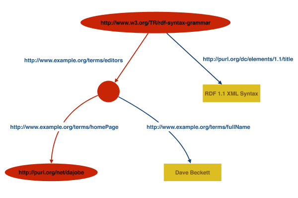

Please refer to the delete: <a
href="http://www.w3.org/2001/sw/RDFCore/errata#rdf-syntax-grammar">check the insert: <a href="http://www.w3.org/2014/rdf1.1-errata"> errata for any errors or issues reported since publication. insert: </p>
insert: <p>
This document is also available in this document, which non-normative format: insert: <a href="diff.html" rel="alternate">diff w.r.t. 2004 Recommendation insert: </a>insert: </p>
insert: <p>
The English version of this specification is the only normative version. Non-normative insert: <a href="http://www.w3.org/Consortium/Translation/">translations insert: </a> may include some normative corrections. delete: </p>delete: <p>See also delete: <a href="http://www.w3.org/2001/sw/RDFCore/translation/rdf-syntax-grammar">translations delete: </a>. be available.
delete: <p>The Resource Description Framework ( delete: <abbr title="Resource Description Framework">RDF delete: </abbr>) is a general-purpose language for representing information in the Web. delete: </p>
This document defines an delete: <a href="http://www.w3.org/TR/2000/REC-xml-20001006"> XML delete: </a> syntax for RDF called RDF/XML in terms of delete: <a href="http://www.w3.org/TR/1999/REC-xml-names-19990114/"> Namespaces in XML delete: </a>, the delete: <a href="http://www.w3.org/TR/2001/REC-xml-infoset-20011024/">XML, the XML Information Set delete: </a>and delete: <a href="http://www.w3.org/TR/2001/REC-xmlbase-20010627/">and XML Base delete: </a>. The delete: <a href="#section-Infoset-Grammar">formal grammar delete: </a>for the syntax is annotated with actions generating triples of the delete: <a href="http://www.w3.org/TR/2004/REC-rdf-concepts-20040210/#dfn-rdf-graph">RDF graph delete: </a>as defined in delete: <a href="http://www.w3.org/TR/2004/REC-rdf-concepts-20040210/">RDF Concepts and Abstract Syntax delete: </a>. The triples are written using the delete: <a href="http://www.w3.org/TR/2004/REC-rdf-testcases-20040210/#ntriples">N-Triples delete: </a>RDF graph serializing format which enables more precise recording of the mapping in a machine processable form. The mappings are recorded as tests cases, gathered and published in delete: <a href="http://www.w3.org/TR/2004/REC-rdf-testcases-20040210/">RDF Test Cases delete: </a>. delete: </p>delete: <div class="status">delete: <h2 class="nonum">delete: <a id="status" name="status">Base. insert: </p>
delete: <p>This document has been reviewed by W3C Members and other interested parties, and it has been endorsed by the Director as a delete: <a
href="http://www.w3.org/2003/06/Process-20030618/tr.html#RecsW3C">W3C Recommendation delete: </a>. W3C's role in making the Recommendation is to draw attention to the specification and to promote its widespread deployment. This enhances the functionality and interoperability of the Web. delete: </p>delete: <p>This is one document in a delete: <a
href="http://www.w3.org/TR/2004/REC-rdf-concepts-20040210/#section-Introduction">set of six delete: </a>( delete: <a
href="http://www.w3.org/TR/2004/REC-rdf-primer-20040210/">Primer delete: </a>, delete: <a
href="http://www.w3.org/TR/2004/REC-rdf-concepts-20040210/">Concepts delete: </a>, delete: <a
href="http://www.w3.org/TR/2004/REC-rdf-syntax-grammar-20040210/">Syntax delete: </a>, delete: <a
href="http://www.w3.org/TR/2004/REC-rdf-mt-20040210/">Semantics delete: </a>, delete: <a
href="http://www.w3.org/TR/2004/REC-rdf-schema-20040210/">Vocabulary delete: </a>, and delete: <a
href="http://www.w3.org/TR/2004/REC-rdf-testcases-20040210/">Test Cases delete: </a>) intended to jointly replace the original Resource Description Framework specifications, delete: <a
href="http://www.w3.org/TR/1999/REC-rdf-syntax-19990222/">RDF Model and Syntax (1999 Recommendation) delete: </a>and delete: <a
href="http://www.w3.org/TR/2000/CR-rdf-schema-20000327/">RDF Schema (2000 Candidate Recommendation) delete: </a>. It has been developed by the delete: <a
href="http://www.w3.org/2001/sw/RDFCore/">RDF Core Working Group delete: </a>as part of the delete: <a href="http://www.w3.org/2001/sw/">W3C Semantic Web Activity delete: </a>( delete: <a href="http://www.w3.org/2001/sw/Activity">Activity Statement delete: </a>, delete: <a
href="http://www.w3.org/2002/11/swv2/charters/RDFCoreWGCharter">Group Charter delete: </a>) for publication on 10 February 2004. delete: </p>delete: <p>Changes to this document since the delete: <a
href="http://www.w3.org/TR/2003/PR-rdf-syntax-grammar-20031215/"
shape="rect">Proposed Recommendation Working Draft delete: </a>are detailed in the delete: <a href="#changes" shape="rect">change log delete: </a>. delete: </p>delete: <p>The public is invited to send comments to delete: <a
href="mailto:www-rdf-comments@w3.org">www-rdf-comments@w3.org delete: </a>( delete: <a
href="http://lists.w3.org/Archives/Public/www-rdf-comments/">archive delete: </a>) and to participate in general discussion of related technology on delete: <a
href="mailto:www-rdf-interest@w3.org"
shape="rect">www-rdf-interest@w3.org delete: </a>( delete: <a
href="http://lists.w3.org/Archives/Public/www-rdf-interest/"
shape="rect">archive delete: </a>). delete: </p>delete: <p>A list of delete: <a href="http://www.w3.org/2001/sw/RDFCore/impls">implementations delete: </a>is available. delete: </p>delete: <p>The W3C maintains a list of delete: <a href="http://www.w3.org/2001/sw/RDFCore/ipr-statements"
rel="disclosure">any patent disclosures related to this work delete: </a>. delete: </p>
This section describes the status of this document at the time of its publication. Other documents may supersede this document. A list of current insert: <abbr title="World Wide Web Consortium"> W3C insert: </abbr> publications and the latest revision of this technical report can be found in the insert: <abbr title="World Wide Web Consortium"> W3C insert: </abbr> technical reports index at http://www.w3.org/TR/.
This document is an edited version of the 2004 RDF XML Syntax Specification Recommendation. The purpose of this revision is to make this document available as part of the RDF 1.1 document set. Changes are limited to revised references, terminology updates, and adaptations to the introduction. The technical content of the document is unchanged, except for the fact that the datatype XMLLiiteral is marked as non-normative in RDF 1.1. The (non-normative) algorithm for parsing XMLLiteral ( insert: <a href="#parseTypeLiteralPropertyElt">Sec. 7.2.17 insert: </a>) has been updated to be in line with the current state of XML technology. Details of the changes are listed in the insert: <a href="#changes-rdf11">Changes insert: </a>section. Since the edits to this document do not invalidate previous implementations the Director decided no new implementation report was required. insert: </p>
insert: <p>
This document was published by the insert: <a href="http://www.w3.org/2011/rdf-wg/">RDF Working Group insert: </a>as a Recommendation. If you wish to make comments regarding this document, please send them to insert: <a href="mailto:public-rdf-comments@w3.org">public-rdf-comments@w3.org insert: </a>( insert: <a href="mailto:public-rdf-comments-request@w3.org?subject=subscribe">subscribe insert: </a>, insert: <a href="http://lists.w3.org/Archives/Public/public-rdf-comments/">archives insert: </a>). All comments are welcome. insert: </p>
insert: <p>
This document has been reviewed by insert: <abbr title="World Wide Web Consortium">W3C insert: </abbr>Members, by software developers, and by other insert: <abbr title="World Wide Web Consortium">W3C insert: </abbr>groups and interested parties, and is endorsed by the Director as a insert: <abbr title="World Wide Web Consortium">W3C insert: </abbr>Recommendation. It is a stable document and may be used as reference material or cited from another document. insert: <abbr title="World Wide Web Consortium">W3C insert: </abbr>'s role in making the Recommendation is to draw attention to the specification and to promote its widespread deployment. This enhances the functionality and interoperability of the Web. insert: </p>
This document defines the delete: <a href="http://www.w3.org/TR/2000/REC-xml-20001006"> XML delete: </a>delete: <a href="#ref-xml">[XML] delete: </a>[ insert: <cite>insert: <a class="bibref" href="#bib-XML10">XML10 insert: </a>insert: </cite>] syntax for RDF graphs which was originally defined in the delete: <a href="http://www.w3.org/TR/1999/REC-rdf-syntax-19990222/">RDF Model & Syntax delete: </a>delete: <a href="#ref-rdfms">[RDF-MS] delete: </a>W3C Recommendation. Subsequent implementations of this syntax and comparison of the resulting RDF graphs have shown that there was ambiguity — implementations generated different graphs and certain syntax forms were not widely implemented. graphs.
This document revises the delete: <a href="http://www.w3.org/TR/1999/REC-rdf-syntax-19990222/#grammar"> original RDF/XML grammar delete: </a>[ insert: <cite>insert: <a class="bibref" href="#bib-RDFMS">RDFMS insert: </a>insert: </cite>] in terms of delete: <a href="http://www.w3.org/TR/2001/REC-xml-infoset-20011024/"> XML Information Set delete: </a>delete: <a href="#ref-xml-infoset">[INFOSET] delete: </a>[ insert: <cite>insert: <a class="bibref" href="#bib-XML-INFOSET">XML-INFOSET insert: </a>insert: </cite>] information items which moves away from the rather low-level details of XML, such as particular forms of empty elements. This allows the grammar to be more precisely recorded and the mapping from the XML syntax to the RDF Graph more clearly shown. The mapping to the RDF graph is done by emitting statements in the form defined N-Triples [ insert: <cite>insert: <a class="bibref" href="#bib-N-TRIPLES">N-TRIPLES insert: </a>insert: </cite>] format. insert: </p>
insert: <p>
This document is part of the suite of RDF 1.1 documents. Other documents in the delete: <a href="http://www.w3.org/TR/2004/REC-rdf-testcases-20040210/#ntriples">N-Triples delete: </a>section of delete: <a href="http://www.w3.org/TR/2004/REC-rdf-testcases-20040210/">RDF Test Cases delete: </a>delete: <a href="#ref-rdf-tests">[RDF-TESTS] delete: </a>which creates an RDF graph, that has semantics defined by delete: <a href="http://www.w3.org/TR/2004/REC-rdf-mt-20040210/">RDF Semantics delete: </a>delete: <a href="#ref-rdf-semantics">[RDF-SEMANTICS] delete: </a>. delete: </p>delete: <p>The complete specification of RDF consists of a number of documents: this suite are:
delete: <a href="http://www.w3.org/TR/2004/REC-rdf-primer-20040210/">RDF Primer delete: </a>delete: <a href="#ref-rdf-primer">[RDF-PRIMER] delete: </a>A document describing the basic concepts underlying RDF, as well as abstract syntax ("RDF Concepts and Abstract Syntax") [ insert: <cite>insert: <a class="bibref" href="#bib-RDF11-CONCEPTS">RDF11-CONCEPTS insert: </a>insert: </cite>]
insert: <span class="secno">2. insert: </span> An XML Syntax for RDF delete: </a>
This section introduces the RDF/XML syntax, describes how it encodes RDF graphs and explains this with examples. If there is any conflict between this informal description and the formal description of the syntax and grammar in sections 6 Syntax Data Model and 7 RDF/XML Grammar , the latter two sections take precedence.
The delete: <a href="http://www.w3.org/TR/2004/REC-rdf-concepts-20040210/"> RDF Concepts and Abstract Syntax delete: </a>delete: <a href="#ref-rdf-concepts">[RDF-CONCEPTS] delete: </a>document [ insert: <cite>insert: <a class="bibref" href="#bib-RDF11-CONCEPTS">RDF11-CONCEPTS insert: </a>insert: </cite>] defines the delete: <a href="http://www.w3.org/TR/2004/REC-rdf-concepts-20040210/#section-data-model"> RDF Graph data model delete: </a>(Section 3.1) and the delete: <a href="http://www.w3.org/TR/2004/REC-rdf-concepts-20040210/#section-Graph-syntax">and the RDF Graph abstract syntax delete: </a>(Section 6). syntax. Along with the delete: <a href="http://www.w3.org/TR/2004/REC-rdf-mt-20040210/"> RDF Semantics delete: </a>delete: <a href="#ref-rdf-semantics">[RDF-SEMANTICS] delete: </a>[ insert: <cite>insert: <a class="bibref" href="#bib-RDF11-MT">RDF11-MT insert: </a>insert: </cite>] this provides an abstract syntax with a formal semantics for it. The RDF graph has delete: <a href="http://www.w3.org/TR/2004/REC-rdf-concepts-20040210/#dfn-node">insert: <em> nodes delete: </a>insert: </em> and labeled directed arcs that link pairs of nodes and this is represented as a set of delete: <a href="http://www.w3.org/TR/2004/REC-rdf-concepts-20040210/#dfn-rdf-triple"> RDF triples delete: </a> where each triple contains a subject node , predicate and object node . Nodes are delete: <a href="http://www.w3.org/TR/2004/REC-rdf-concepts-20040210/#dfn-URI-reference">RDF URI references delete: </a>, delete: <a href="http://www.w3.org/TR/2004/REC-rdf-concepts-20040210/#dfn-literal">RDF literals delete: </a>IRIs, literals, or are delete: <a href="http://www.w3.org/TR/2004/REC-rdf-concepts-20040210/#dfn-blank-node"> blank nodes delete: </a>. nodes. Blank nodes may be given a document-local, non- delete: <a href="http://www.w3.org/TR/2004/REC-rdf-concepts-20040210/#dfn-URI-reference">RDF URI references delete: </a>document-local identifier called a delete: <a href="http://www.w3.org/TR/2004/REC-rdf-concepts-20040210/#dfn-blank-node-id"> blank node identifier delete: </a>. identifier. Predicates are delete: <a href="http://www.w3.org/TR/2004/REC-rdf-concepts-20040210/#dfn-URI-reference">RDF URI references delete: </a>IRIs and can be interpreted as either a relationship between the two nodes or as defining an attribute value (object node) for some subject node.
In order to encode the graph in XML, the nodes and predicates have to be represented in XML terms — — element names, attribute names, element contents and attribute values. RDF/XML uses XML QNames as defined in delete: <a href="http://www.w3.org/TR/1999/REC-xml-names-19990114/"> Namespaces in XML delete: </a>delete: <a href="#ref-namespaces">[XML-NS] delete: </a>[ insert: <cite>insert: <a class="bibref" href="#bib-XML-NAMES">XML-NAMES insert: </a>insert: </cite>] to represent delete: <a href="http://www.w3.org/TR/2004/REC-rdf-concepts-20040210/#dfn-URI-reference">RDF URI references delete: </a>. IRIs. All QNames have a namespace name which is a URI reference an IRI and a short local name . In addition, QNames can either have a short prefix or be declared with the default namespace declaration and have none (but still have a namespace name)
The delete: <a href="http://www.w3.org/TR/2004/REC-rdf-concepts-20040210/#dfn-URI-reference">RDF URI reference delete: </a>IRI represented by a QName is determined by appending the local name part of the QName after the namespace name (URI reference) (IRI) part of the QName. This is used to shorten the delete: <a href="http://www.w3.org/TR/2004/REC-rdf-concepts-20040210/#dfn-URI-reference">RDF URI references delete: </a>IRI of all predicates and some nodes. delete: <a href="http://www.w3.org/TR/2004/REC-rdf-concepts-20040210/#dfn-URI-reference">RDF URI references delete: </a>IRIs identifying subject and object nodes can also be stored as XML attribute values. delete: <a href="http://www.w3.org/TR/2004/REC-rdf-concepts-20040210/#dfn-literal"> RDF literals delete: </a>, which can only be object nodes, become either XML element text content or XML attribute values.
A graph can be considered a collection of paths of the form node, predicate arc, node, predicate arc, node, predicate arc, ... node which cover the entire graph. In RDF/XML these turn into sequences of elements inside elements which alternate between elements for nodes and predicate arcs. This has been called a series of node/arc stripes. The node at the start of the sequence turns into the outermost element, the next predicate arc turns into a child element, and so on. The stripes generally start at the top of an RDF/XML document and always begin with nodes.
Several RDF/XML examples are given in the following sections building up to complete RDF/XML documents. Example 7 is the first complete RDF/XML document.
An RDF graph is given in delete: <a href="#figure1">insert: <a href="#figure1" class="fig-ref"> Figure 1 where the nodes are represented as ovals and contain their delete: <a href="http://www.w3.org/TR/2004/REC-rdf-concepts-20040210/#dfn-URI-reference">RDF URI references delete: </a>IRIs where they have them, all the predicate arcs are labeled with delete: <a href="http://www.w3.org/TR/2004/REC-rdf-concepts-20040210/#dfn-URI-reference">RDF URI references delete: </a>and delete: <a href="http://www.w3.org/TR/2004/REC-rdf-concepts-20040210/#dfn-plain-literal">plain literal delete: </a>IRIs and string literals nodes have been written in rectangles.
If we follow one node, predicate arc ... , node path through the graph shown in delete: <a href="#figure2">insert: <a href="#figure2" class="fig-ref"> Figure 2 :
delete: <div class="figure">delete: <img src="figure2.png" alt="One Path Through the Graph" height="212" width="600" />delete: <br />delete: <a id="figure2" name="figure2">Figure 2: insert: <figure id="figure2">insert: <img alt="One Path Through the Graph" src="figure2.png" />  insert: <figcaption>Fig. insert: <span class="figno">2 insert: </span>insert: <span class="fig-title"> One Path Through the Graph delete: </a> ( SVG version ) delete: </div>insert: </span>insert: </figcaption>insert: </figure>
The left hand side of the delete: <a href="#figure2">insert: <a href="#figure2" class="fig-ref"> Figure 2 graph corresponds to the node/predicate arc stripes:
Node with delete: <a href="http://www.w3.org/TR/2004/REC-rdf-concepts-20040210/#dfn-URI-reference">RDF URI reference delete: </a>IRI http://www.w3.org/TR/rdf-syntax-grammar
Predicate Arc labeled with delete: <a href="http://www.w3.org/TR/2004/REC-rdf-concepts-20040210/#dfn-URI-reference">RDF URI reference delete: </a>IRI http://example.org/terms/editor
Node with no delete: <a href="http://www.w3.org/TR/2004/REC-rdf-concepts-20040210/#dfn-URI-reference">RDF URI reference delete: </a>IRI
Predicate Arc labeled with delete: <a href="http://www.w3.org/TR/2004/REC-rdf-concepts-20040210/#dfn-URI-reference">RDF URI reference delete: </a>IRI http://example.org/terms/homePage
Node with delete: <a href="http://www.w3.org/TR/2004/REC-rdf-concepts-20040210/#dfn-URI-reference">RDF URI reference delete: </a>IRI http://purl.org/net/dajobe/
In RDF/XML, the sequence of 5 nodes and predicate arcs on the left hand side of delete: <a href="#figure2">insert: <a href="#figure2" class="fig-ref"> Figure 2 corresponds to the usage of five XML elements of two types, for the graph nodes and predicate arcs. These are conventionally called node elements and property elements respectively. In the striping shown in Example 1 , rdf:Description is the node element (used three times for the three nodes) and ex:editor and ex:homePage are the two property elements.
The delete: <a href="#figure2">insert: <a href="#figure2" class="fig-ref"> Figure 2 graph consists of some nodes that are delete: <a href="http://www.w3.org/TR/2004/REC-rdf-concepts-20040210/#dfn-URI-reference">RDF URI references delete: </a>IRIs (and others that are not) and this can be added to the RDF/XML using the rdf:about attribute on node elements to give the result in Example 2 :
Adding the other two paths through the delete: <a href="#figure1">insert: <a href="#figure1" class="fig-ref"> Figure 1 graph to the RDF/XML in Example 2 gives the result in Example 3 (this example fails to show that the blank node is shared between the two paths, see 2.10 ):
There are several abbreviations that can be used to make common uses easier to write down. In particular, it is common that a subject node in the RDF graph has multiple outgoing predicate arcs. RDF/XML provides an abbreviation for the corresponding syntax when a node element about a resource has multiple property elements. This can be abbreviated by using multiple child property elements inside the node element describing the subject node.
Taking Example 3 , there are two node elements that can take multiple property elements. The subject node with URI reference IRI http://www.w3.org/TR/rdf-syntax-grammar has property elements ex:editor and ex:title and the node element for the blank node can take ex:homePage and ex:fullName . This abbreviation gives the result shown in Example 4 (this example does show that there is a single blank node):
When a predicate arc in an RDF graph points to an object node which has no further predicate arcs, which appears in RDF/XML as an empty node element <rdf:Description rdf:about="..."> rdf:about="..."> </rdf:Description> (or <rdf:Description rdf:about="..." rdf:about="..." /> ) this form can be shortened. This is done by using the delete: <a href="http://www.w3.org/TR/2004/REC-rdf-concepts-20040210/#dfn-URI-reference">RDF URI reference delete: </a>IRI of the object node as the value of an XML attribute rdf:resource on the containing property element and making the property element empty.
In this example, the property element ex:homePage contains an empty node element with the delete: <a href="http://www.w3.org/TR/2004/REC-rdf-concepts-20040210/#dfn-URI-reference">RDF URI reference delete: </a>IRI http://purl.org/net/dajobe/ . This can be replaced with the empty property element form giving the result shown in Example 5 :
When a property element's content is string literal, it may be possible to use it as an XML attribute on the containing node element. This can be done for multiple properties on the same node element only if the property element name is not repeated (required by XML — — attribute names are unique on an XML element) and any in-scope xml:lang on the property element's string literal (if any) are the same (see Section 2.7 ) This abbreviation is known as a Property Attribute and can be applied to any node element.
This abbreviation can also be used when the property element is rdf:type and it has an rdf:resource attribute the value of which is interpreted as a delete: <a href="http://www.w3.org/TR/2004/REC-rdf-concepts-20040210/#dfn-URI-reference">RDF URI reference delete: </a>IRI object node.
In Example 5 :, there are two property elements with string literal content, the dc:title and ex:fullName property elements. These can be replaced with property attributes giving the result shown in Example 6 :
insert: <span class="secno"> 2.6 insert: </span> Completing the Document: Document Element and XML Declaration delete: </a>
To create a complete RDF/XML document, the serialization of the graph into XML is usually contained inside an rdf:RDF XML element which becomes the top-level XML document element. Conventionally the rdf:RDF element is also used to declare the XML namespaces that are used, although that is not required. When there is only one top-level node element inside rdf:RDF , the rdf:RDF can be omitted although any XML namespaces must still be declared.
The XML specification also permits an XML declaration at the top of the document with the XML version and possibly the XML content encoding. This is optional but recommended.
Completing the RDF/XML could be done for any of the correct complete graph examples from Example 4 onwards but taking the smallest Example 6 and adding the final components, gives a complete RDF/XML representation of the original delete: <a href="#figure1">insert: <a href="#figure1" class="fig-ref"> Figure 1 graph in Example 7 :
RDF/XML permits the use of the xml:lang attribute as defined by 2.12 Language Identification of delete: <a href="http://www.w3.org/TR/2000/REC-xml-20001006"> XML 1.0 delete: </a>delete: <a href="#ref-xml">[XML] delete: </a>[ insert: <cite>insert: <a class="bibref" href="#bib-XML10">XML10 insert: </a>insert: </cite>] to allow the identification of content language. The xml:lang attribute can be used on any node element or property element to indicate that the included content is in the given language. Typed literals which includes XML literals are not affected by this attribute. The most specific in-scope language present (if any) is applied to property element string literal content or property attribute values. The xml:lang="" xml:lang="" form indicates the absence of a language identifier.
Some examples of marking content languages for RDF properties are shown in Example 8 :
insert: <em>This section is non-normative. insert: </em>insert: </p>
RDF allows delete: <a href="http://www.w3.org/TR/2004/REC-rdf-concepts-20040210/#dfn-rdf-XMLLiteral"> XML literals delete: </a>( delete: <a href="#ref-rdf-concepts">[RDF-CONCEPTS] delete: </a>Section 5, delete: <cite>XML Content within an RDF graph delete: </cite>) [RDF11-CONCEPTS] to be given as the object node of a predicate. These are written in RDF/XML as content of a property element (not a property attribute) and indicated using the rdf:parseType="Literal" rdf:parseType="Literal" attribute on the containing property element.
An example of writing an XML literal is given in Example 9 where there is a single RDF triple with the subject node delete: <a href="http://www.w3.org/TR/2004/REC-rdf-concepts-20040210/#dfn-URI-reference">RDF URI reference delete: </a>IRI http://example.org/item01 , the predicate delete: <a href="http://www.w3.org/TR/2004/REC-rdf-concepts-20040210/#dfn-URI-reference">RDF URI reference delete: </a>IRI http://example.org/stuff/1.0/prop (from ex:prop ) and the object node with XML literal content beginning a:Box .
RDF allows delete: <a href="http://www.w3.org/TR/2004/REC-rdf-concepts-20040210/#dfn-typed-literal"> typed literals delete: </a> to be given as the object node of a predicate. Typed literals consist of a literal string and a datatype delete: <a href="http://www.w3.org/TR/2004/REC-rdf-concepts-20040210/#dfn-URI-reference">RDF URI reference delete: </a>. IRI. These are written in RDF/XML using the same syntax for literal string nodes in the property element form (not property attribute) but with an additional rdf:datatype=" rdf:datatype=" datatypeURI " " attribute on the property element. Any delete: <a href="http://www.w3.org/TR/2004/REC-rdf-concepts-20040210/#dfn-URI-reference">RDF URI reference delete: </a>IRI can be used in the attribute.
An example of an RDF delete: <a href="http://www.w3.org/TR/2004/REC-rdf-concepts-20040210/#dfn-typed-literal"> typed literal delete: </a> is given in Example 10 where there is a single RDF triple with the subject node delete: <a href="http://www.w3.org/TR/2004/REC-rdf-concepts-20040210/#dfn-URI-reference">RDF URI reference delete: </a>IRI http://example.org/item01 , the predicate delete: <a href="http://www.w3.org/TR/2004/REC-rdf-concepts-20040210/#dfn-URI-reference">RDF URI reference delete: </a>IRI http://example.org/stuff/1.0/size (from ex:size ) and the object node with the delete: <a href="http://www.w3.org/TR/2004/REC-rdf-concepts-20040210/#dfn-typed-literal"> typed literal delete: </a>("123", ("123", http://www.w3.org/2001/XMLSchema#int ) to be interpreted as an delete: <a href="http://www.w3.org/TR/2001/REC-xmlschema-2-20010502/">W3C XML Schema delete: </a>delete: <a href="#ref-xml-schema2">[XML-SCHEMA2] delete: </a>[ insert: <cite>insert: <a class="bibref" href="#bib-XMLSCHEMA-2">XMLSCHEMA-2 insert: </a>insert: </cite>] datatype int. delete: </p>delete: <div class="exampleOuter">delete: <div class="figure">delete: <a id="example10" name="example10">insert: <code>int insert: </code>. insert: </p>
insert: <div class="example">
insert: <div class="example-title">
insert: <span> Example 10: 10 insert: </span>insert: </div>
delete: <a href="http://www.w3.org/TR/2004/REC-rdf-concepts-20040210/#dfn-blank-node"> Blank nodes delete: </a> in the RDF graph are distinct but have no delete: <a href="http://www.w3.org/TR/2004/REC-rdf-concepts-20040210/#dfn-URI-reference">RDF URI reference delete: </a>IRI identifier. It is sometimes required that the same graph delete: <a href="http://www.w3.org/TR/2004/REC-rdf-concepts-20040210/#dfn-blank-node"> blank node delete: </a> is referred to in the RDF/XML in multiple places, such as at the subject and object of several RDF triples. In this case, a delete: <em>delete: <a href="http://www.w3.org/TR/2004/REC-rdf-concepts-20040210/#dfn-blank-node-id"> blank node identifier delete: </a>delete: </em> can be given to the delete: <a href="http://www.w3.org/TR/2004/REC-rdf-concepts-20040210/#dfn-blank-node"> blank node delete: </a> for identifying it in the document. Blank node identifiers in RDF/XML are scoped to the containing XML Information Set document information item . A delete: <a href="http://www.w3.org/TR/2004/REC-rdf-concepts-20040210/#dfn-blank-node-id"> blank node identifier delete: </a> is used on a node element to replace rdf:about=" delete: </code>delete: <em>RDF URI reference delete: </em>delete: <code>" rdf:about=" insert: </code>insert: <em>IRI insert: </em>insert: <code>" or on a property element to replace rdf:resource=" delete: </code>delete: <em>RDF URI reference delete: </em>delete: <code>" rdf:resource=" insert: </code>insert: <em>IRI insert: </em>insert: <code>" with rdf:nodeID=" delete: </code>delete: <em>delete: <a href="http://www.w3.org/TR/2004/REC-rdf-concepts-20040210/#dfn-blank-node-id">rdf:nodeID=" insert: </code>insert: <em> blank node identifier delete: </a>delete: </em>delete: <code>" insert: </em>insert: <code>" in both cases.
Taking Example 7 and explicitly giving a delete: <a href="http://www.w3.org/TR/2004/REC-rdf-concepts-20040210/#dfn-blank-node-id"> blank node identifier delete: </a> of abc to the blank node in it gives the result shown in Example 11 . The second rdf:Description property element is about the blank node.
delete: <a href="http://www.w3.org/TR/2004/REC-rdf-concepts-20040210/#dfn-blank-node"> Blank nodes delete: </a> (not delete: <a href="http://www.w3.org/TR/2004/REC-rdf-concepts-20040210/#dfn-URI-reference">RDF URI reference delete: </a>IRI nodes) in RDF graphs can be written in a form that allows the <rdf:Description> </rdf:Description> pair to be omitted. The omission is done by putting an rdf:parseType="Resource" rdf:parseType="Resource" attribute on the containing property element that turns the property element into a property-and-node element, which can itself have both property elements and property attributes. Property attributes and the rdf:nodeID attribute are not permitted on property-and-node elements.
Taking the earlier Example 7 , the contents of the ex:editor property element could be alternatively done in this fashion to give the form shown in Example 12 :
insert: <span class="secno"> 2.12 insert: </span> Omitting Nodes: Property Attributes on an empty Property Element delete: </a>
If all of the property elements on a blank node element have string literal values with the same in-scope xml:lang value (if present) and each of these property elements appears at most once and there is at most one rdf:type property element with a delete: <a href="http://www.w3.org/TR/2004/REC-rdf-concepts-20040210/#dfn-URI-reference">RDF URI reference delete: </a>IRI object node, these can be abbreviated by moving them to be property attributes on the containing property element which is made an empty element.
Taking the earlier Example 5 , the ex:editor property element contains a blank node element with two property elements ex:fullname and ex:homePage . ex:homePage is not suitable here since it does not have a string literal value, so it is being ignored for the purposes of this example. The abbreviated form removes the ex:fullName property element and adds a new property attribute ex:fullName with the string literal value of the deleted property element to the ex:editor property element. The blank node element becomes implicit in the now empty ex:editor property element. The result is shown in Example 13 .
It is common for RDF graphs to have rdf:type predicates from subject nodes. These are conventionally called typed nodes in the graph, or typed node elements in the RDF/XML. RDF/XML allows this triple to be expressed more concisely. by replacing the rdf:Description node element name with the namespaced-element corresponding to the delete: <a href="http://www.w3.org/TR/2004/REC-rdf-concepts-20040210/#dfn-URI-reference">RDF URI reference delete: </a>IRI of the value of the type relationship. There may, of course, be multiple rdf:type predicates but only one can be used in this way, the others must remain as property elements or property attributes.
The typed node elements are commonly used in RDF/XML with the built-in classes in the RDF vocabulary : rdf:Seq , rdf:Bag , rdf:Alt , rdf:Statement , rdf:Property and rdf:List .
RDF/XML allows further abbreviating delete: <a href="http://www.w3.org/TR/2004/REC-rdf-concepts-20040210/#dfn-URI-reference">RDF URI references delete: </a>IRIs in XML attributes in two ways. The XML Infoset provides a base URI attribute xml:base that sets the base URI for resolving relative delete: <a href="http://www.w3.org/TR/2004/REC-rdf-concepts-20040210/#dfn-URI-reference">RDF URI references delete: </a>, IRIs, otherwise the base URI is that of the document. The base URI applies to all RDF/XML attributes that deal with delete: <a href="http://www.w3.org/TR/2004/REC-rdf-concepts-20040210/#dfn-URI-reference">RDF URI references delete: </a>IRIs which are rdf:about , rdf:resource , rdf:ID and rdf:datatype .
The rdf:ID attribute on a node element (not property element, that has another meaning) can be used instead of rdf:about and gives a relative delete: <a href="http://www.w3.org/TR/2004/REC-rdf-concepts-20040210/#dfn-URI-reference">RDF URI reference delete: </a>IRI equivalent to # concatenated with the rdf:ID attribute value. So for example if rdf:ID="name" rdf:ID="name" , that would be equivalent to rdf:about="#name" rdf:about="#name" . rdf:ID provides an additional check since the same name can only appear once in the scope of an xml:base value (or document, if none is given), so is useful for defining a set of distinct, related terms relative to the same delete: <a href="http://www.w3.org/TR/2004/REC-rdf-concepts-20040210/#dfn-URI-reference">RDF URI reference delete: </a>. IRI.
Both forms require a base URI to be known, either from an in-scope xml:base or from the URI of the RDF/XML document.
Example 16 shows abbreviating the node delete: <a href="http://www.w3.org/TR/2004/REC-rdf-concepts-20040210/#dfn-URI-reference">RDF URI reference delete: </a>IRI of http://example.org/here/#snack using an xml:base of http://example.org/here/ and an rdf:ID on the rdf:Description node element. The object node of the ex:prop predicate is an absolute delete: <a href="http://www.w3.org/TR/2004/REC-rdf-concepts-20040210/#dfn-URI-reference">RDF URI reference delete: </a>IRI resolved from the rdf:resource XML attribute value using the in-scope base URI to give the delete: <a href="http://www.w3.org/TR/2004/REC-rdf-concepts-20040210/#dfn-URI-reference">RDF URI reference delete: </a>IRI http://example.org/here/fruit/apple .
insert: <span class="secno"> 2.15 insert: </span> Container Membership Property Elements: rdf:li and rdf:_ n delete: </a>
RDF has a set of container membership properties and corresponding property elements that are mostly used with instances of the rdf:Seq , rdf:Bag and rdf:Alt classes which may be written as typed node elements. The list properties are rdf:_1 , rdf:_2 etc. and can be written as property elements or property attributes as shown in Example 17 . There is an rdf:li special property element that is equivalent to rdf:_1 , rdf:_2 in order, explained in detail in section 7.4 . The mapping to the container membership properties is always done in the order that the rdf:li special property elements appear in XML — — the document order is significant. The equivalent RDF/XML to Example 17 written in this form is shown in Example 18 .
RDF/XML allows an rdf:parseType="Collection" rdf:parseType="Collection" attribute on a property element to let it contain multiple node elements. These contained node elements give the set of subject nodes of the collection. This syntax form corresponds to a set of triples connecting the collection of subject nodes, the exact triples generated are described in detail in Section 7.2.19 Production parseTypeCollectionPropertyElt . The collection construction is always done in the order that the node elements appear in the XML document. Whether the order of the collection of nodes is significant is an application issue and not defined here.
Example 19 shows a collection of three nodes elements at the end of the ex:hasFruit property element using this form.
The rdf:ID attribute can be used on a property element to reify the triple that it generates (See section 7.3 Reification Rules for the full details). The identifier for the triple should be constructed as a delete: <a href="http://www.w3.org/TR/2004/REC-rdf-concepts-20040210/#dfn-URI-reference">RDF URI reference delete: </a>IRI made from the relative URI reference IRI # concatenated with the rdf:ID attribute value, resolved against the in-scope base URI. So for example if rdf:ID="triple" rdf:ID="triple" , that would be equivalent to the delete: <a href="http://www.w3.org/TR/2004/REC-rdf-concepts-20040210/#dfn-URI-reference">RDF URI reference delete: </a>IRI formed from relative URI reference IRI #triple against the base URI. Each ( rdf:ID attribute value, base URI) pair has to be unique in an RDF/XML document, see constraint-id .
Example 20 shows a rdf:ID being used to reify a triple made from the ex:prop property element giving the reified triple the delete: <a href="http://www.w3.org/TR/2004/REC-rdf-concepts-20040210/#dfn-URI-reference">RDF URI reference delete: </a>IRI http://example.org/triples/#triple1 .
The key words "MUST", "MUST NOT", "REQUIRED", "SHALL", "SHALL NOT", "SHOULD", "SHOULD NOT", "RECOMMENDED", "MAY", and "OPTIONAL" " insert: <em class="rfc2119" title="MUST">MUST insert: </em>", " insert: <em class="rfc2119" title="MUST NOT">MUST NOT insert: </em>", " insert: <em class="rfc2119" title="REQUIRED">REQUIRED insert: </em>", " insert: <em class="rfc2119" title="SHALL">SHALL insert: </em>", " insert: <em class="rfc2119" title="SHALL
NOT">SHALL NOT insert: </em>", " insert: <em class="rfc2119" title="SHOULD">SHOULD insert: </em>", " insert: <em class="rfc2119" title="SHOULD NOT">SHOULD NOT insert: </em>", " insert: <em class="rfc2119" title="RECOMMENDED">RECOMMENDED insert: </em>", " insert: <em class="rfc2119" title="MAY">MAY insert: </em>", and " insert: <em class="rfc2119" title="OPTIONAL">OPTIONAL insert: </em>" in this document are to be interpreted as described in delete: <a href="http://www.ietf.org/rfc/rfc2119.txt"> RFC 2119 delete: </a>delete: <a href="#ref-keywords">[KEYWORDS] delete: </a>. [ insert: <cite>insert: <a class="bibref" href="#bib-RFC2119">RFC2119 insert: </a>insert: </cite>].
All use of string without further qualification refers to a Unicode delete: <a href="#ref-unicode">[UNICODE] delete: </a>[ insert: <cite>insert: <a class="bibref" href="#bib-UNICODE">UNICODE insert: </a>insert: </cite>] character string; a sequence of characters represented by a code point in Unicode. (Such as defined in delete: <a href="#ref-charmod">[CHARMOD] delete: </a>in section delete: <a href="http://www.w3.org/TR/2003/WD-charmod-20030822/#sec-Strings">3.4 Strings delete: </a>). delete: </p>delete: <h2>delete: <a id="section-MIME-Type" name="section-MIME-Type">4 insert: </p>
insert: <span class="secno">4. insert: </span> RDF MIME Type, File Extension and Macintosh File Type delete: </a>
The Internet media type / MIME type for RDF/XML is " application/rdf+xml " — see delete: <a href="http://www.ietf.org/rfc/rfc3023.txt">— RFC 3023 delete: </a>delete: <a href="#ref-rfc3023">[RFC-3023] delete: </a>[ insert: <cite>insert: <a class="bibref" href="#bib-RFC3023">RFC3023 insert: </a>insert: </cite>], section 8.18.
Registration Note (Informative): For the state of the MIME type registration, consult delete: <a href="http://www.iana.org/assignments/media-types/"> IANA MIME Media Types delete: </a>delete: <a href="#ref-iana-media-types">[IANA-MEDIA-TYPES] delete: </a>[ insert: <cite>insert: <a class="bibref" href="#bib-IANA-MEDIA-TYPES">IANA-MEDIA-TYPES insert: </a>insert: </cite>]
It is recommended that RDF/XML files have the extension ".rdf" ".rdf" (all lowercase) on all platforms.
It is recommended that RDF/XML files stored on Macintosh HFS file systems be given a file type of "rdf " "rdf " (all lowercase, with a space character as the fourth letter).
The names delete: <code>aboutEach delete: </code>and delete: <code>aboutEachPrefix delete: </code>were removed from the language and the RDF vocabulary by the RDF Core Working Group. See the resolution of issues delete: <a href="http://www.w3.org/2000/03/rdf-tracking/#rdfms-abouteach">rdfms-abouteach delete: </a>and delete: <a href="http://www.w3.org/2000/03/rdf-tracking/#rdfms-abouteachprefix">rdfms-abouteachprefix delete: </a>for further information. delete: </p>delete: </div>delete: <div class="note">delete: <p>delete: <strong>Note (Informative): delete: </strong>The names delete: <code>List delete: </code>, delete: <code>first delete: </code>, delete: <code>rest delete: </code>and delete: <code>nil delete: </code>were added for issue delete: <a href="http://www.w3.org/2000/03/rdf-tracking/#rdfms-seq-representation">rdfms-seq-representation delete: </a>. The names delete: <code>XMLLiteral delete: </code>and delete: <code>datatype delete: </code>were added to support RDF datatyping. The name delete: <code>nodeID delete: </code>was added for issue delete: <a href="http://www.w3.org/2000/03/rdf-tracking/#rdfms-syntax-incomplete">rdfms-syntax-incomplete delete: </a>. See the delete: <a href="http://www.w3.org/2000/03/rdf-tracking/">RDF Core Issues List delete: </a>for further information. delete: </p>delete: </div>delete: <p>The delete: <span class="termdef">delete: <a id="rdf-ns-uri" name="rdf-ns-uri">insert: <dfn id="rdf-ns-uri"> RDF namespace URI reference delete: </a>delete: </span>IRI insert: </dfn> (or namespace name) is http://www.w3.org/1999/02/22-rdf-syntax-ns# and is typically used in XML with the prefix rdf although other prefix strings may be used. The delete: <span class="termdef">delete: <a id="rdf-vocabulary" name="rdf-vocabulary">insert: <dfn id="rdf-vocabulary"> RDF Vocabulary delete: </a>delete: </span>insert: </dfn> is identified by this namespace name and consists of the following names only:
Syntax names — — not concepts
RDF Description ID about parseType resource li nodeID datatype
Class names
Seq Bag Alt Statement Property XMLLiteral List
Property names
subject predicate object type value first rest _ n where n is a decimal integer greater than zero with no leading zeros.
Resource names
nil
Any other names are not defined and insert: <em class="rfc2119" title="SHOULD"> SHOULD insert: </em> generate a warning when encountered, but should otherwise behave normally.
Within RDF/XML documents it is not permitted to use XML namespaces whose namespace name is the delete: <a href="#rdf-ns-uri" class="termref">insert: <a class="termref" href="#rdf-ns-uri"> · RDF namespace URI reference IRI · concatenated with additional characters.
Throughout this document the terminology rdf: name will be used to indicate name is from the RDF vocabulary and it has a delete: <a href="http://www.w3.org/TR/2004/REC-rdf-concepts-20040210/#dfn-URI-reference">RDF URI reference delete: </a>IRI of the concatenation of the delete: <a href="#rdf-ns-uri" class="termref">insert: <a class="termref" href="#rdf-ns-uri"> · RDF namespace URI reference IRI · and name . For example, rdf:type has the delete: <a href="http://www.w3.org/TR/2004/REC-rdf-concepts-20040210/#dfn-URI-reference">RDF URI reference delete: </a>IRI http://www.w3.org/1999/02/22-rdf-syntax-ns#type
The delete: <a href="http://www.w3.org/TR/2004/REC-rdf-concepts-20040210/#dfn-rdf-graph">RDF Graph delete: </a>( delete: <a href="http://www.w3.org/TR/2004/REC-rdf-concepts-20040210/"> RDF Concepts and Abstract Syntax delete: </a>Section 3) document [ insert: <cite>insert: <a class="bibref" href="#bib-RDF11-CONCEPTS">RDF11-CONCEPTS insert: </a>insert: </cite>] defines the three types of nodes and one type of RDF data that can act as node and/or predicate:
delete: <a href="http://www.w3.org/TR/2004/REC-rdf-concepts-20040210/#dfn-URI-reference">RDF URI reference delete: </a>nodes and predicates IRI
delete: <a href="http://www.w3.org/TR/2004/REC-rdf-concepts-20040210/#dfn-URI-reference">RDF URI references delete: </a>( delete: <a href="http://www.w3.org/TR/2004/REC-rdf-concepts-20040210/">RDF Concepts and Abstract Syntax delete: </a>Section 3.1) IRIs can act as node (both subject and object) and as predicate. insert: </p>
insert: <p>
insert: <a href="http://www.w3.org/TR/rdf11-concepts/#section-IRIs">IRIs insert: </a> can be either:
given as XML attribute values interpreted as relative URI references IRIs that are resolved against the in-scope base URI as described in section 5.3 to give absolute delete: <a href="http://www.w3.org/TR/2004/REC-rdf-concepts-20040210/#dfn-URI-reference">RDF URI references delete: </a>IRIs
transformed from XML namespace-qualified element and attribute names (QNames)
transformed from rdf:ID attribute values.
Within RDF/XML, XML QNames are transformed into delete: <a href="http://www.w3.org/TR/2004/REC-rdf-concepts-20040210/#dfn-URI-reference">RDF URI references delete: </a>IRIs by appending the XML local name to the namespace name (URI reference). (IRI). For example, if the XML namespace prefix foo has namespace name (URI reference) (IRI) http://example.org/somewhere/ then the QName foo:bar would correspond to the RDF URI reference IRI http://example.org/somewhere/bar . Note that this restricts which delete: <a href="http://www.w3.org/TR/2004/REC-rdf-concepts-20040210/#dfn-URI-reference">RDF URI references delete: </a>IRIs can be made and the same URI IRI can be given in multiple ways.
The rdf:ID values are transformed into delete: <a href="http://www.w3.org/TR/2004/REC-rdf-concepts-20040210/#dfn-URI-reference">RDF URI references delete: </a>IRIs by appending the attribute value to the result of appending "#" "#" to the in-scope base URI which is defined in Section 5.3 Resolving URIs IRIs
Literal nodes (always object nodes)
delete: <a href="http://www.w3.org/TR/2004/REC-rdf-concepts-20040210/#dfn-literal">RDF literals delete: </a>( delete: <a href="http://www.w3.org/TR/2004/REC-rdf-concepts-20040210/">RDF Concepts and Abstract Syntax delete: </a>6.5) are either delete: <a href="http://www.w3.org/TR/2004/REC-rdf-concepts-20040210/#dfn-plain-literal">plain literals delete: </a>(ibid), Literals can only act as object nodes. insert: </p>
insert: <p>
insert: <a href="http://www.w3.org/TR/rdf11-concepts/#section-Graph-Literal">Literals insert: </a>always have a datatype. Language-tagged strings get the datatype insert: <code>rdf:langString insert: </code>. When there is no language tag or delete: <a href="http://www.w3.org/TR/2004/REC-rdf-concepts-20040210/#dfn-typed-literal">typed literals delete: </a>(ibid). The latter includes delete: <a href="http://www.w3.org/TR/2004/REC-rdf-concepts-20040210/#dfn-rdf-XMLLiteral">XML literals delete: </a>(ibid section 5, delete: <cite>XML Content within an RDF graph delete: </cite>). datatype specified the literal is assumed to have the datatype insert: <code>xsd:string insert: </code>.
Blank Node Identifiers
delete: <a href="http://www.w3.org/TR/2004/REC-rdf-concepts-20040210/#dfn-blank-node">Blank nodes can act as subject node and as object node. insert: </p>
insert: <p>
insert: <a href="http://www.w3.org/TR/rdf11-concepts/#section-blank-nodes"> Blank nodes have distinct identity in the RDF graph. When the graph is written in a syntax such as RDF/XML, these blank nodes may need graph-local identifiers and a syntax in order to preserve this distinction. These local identifiers are called delete: <a href="http://www.w3.org/TR/2004/REC-rdf-concepts-20040210/#dfn-blank-node-id"> blank node identifiers delete: </a> and are used in RDF/XML as values of the rdf:nodeID attribute with the syntax given in Production nodeIdAttr . Blank node identifiers in RDF/XML are scoped to the XML Information Set document information item .
If no blank node identifier is given explicitly as an rdf:nodeID attribute value then one will need to be generated (using generated-blank-node-id, see section 6.3.3 ). Such generated blank node identifiers must not clash with any blank node identifiers derived from rdf:nodeID attribute values. This can be implemented by any method that preserves the distinct identity of all the blank nodes in the graph, that is, the same blank node identifier is not given for different blank nodes. One possible method would be to add a constant prefix to all the rdf:nodeID attribute values and ensure no generated blank node identifiers ever used that prefix. Another would be to map all rdf:nodeID attribute values to new generated blank node identifiers and perform that mapping on all such values in the RDF/XML document.
RDF/XML supports delete: <a href="http://www.w3.org/TR/2001/REC-xmlbase-20010627/"> XML Base delete: </a>delete: <a href="#ref-xml-base">[XML-BASE] delete: </a>[ insert: <cite>insert: <a class="bibref" href="#bib-XMLBASE">XMLBASE insert: </a>insert: </cite>] which defines a delete: <a href="#eventterm-element-base-uri" class="termref">insert: <a class="termref" href="#eventterm-element-base-uri"> · base-uri · accessor for each · root event · and · element event · . Relative URI references IRIs are resolved into delete: <a href="http://www.w3.org/TR/2004/REC-rdf-concepts-20040210/#dfn-URI-reference">RDF URI references delete: </a>IRIs according to the algorithm specified in delete: <a href="http://www.w3.org/TR/2001/REC-xmlbase-20010627/">XML Base delete: </a>delete: <a href="#ref-xml-base">[XML-BASE] delete: </a>[ insert: <cite>insert: <a class="bibref" href="#bib-XMLBASE">XMLBASE insert: </a>insert: </cite>] (and RFC 2396). These specifications do not specify an algorithm for resolving a fragment identifier alone, such as #foo , or the empty string "" "" into an delete: <a href="http://www.w3.org/TR/2004/REC-rdf-concepts-20040210/#dfn-URI-reference">RDF URI reference delete: </a>. IRI. In RDF/XML, a fragment identifier is transformed into a delete: <a href="http://www.w3.org/TR/2004/REC-rdf-concepts-20040210/#dfn-URI-reference">RDF URI reference delete: </a>an IRI by appending the fragment identifier to the in-scope base URI. The empty string is transformed into an delete: <a href="http://www.w3.org/TR/2004/REC-rdf-concepts-20040210/#dfn-URI-reference">RDF URI reference delete: </a>IRI by substituting the in-scope base URI.
An empty same document reference "" resolves against the URI part of the base URI; any fragment part is ignored. See Uniform Resource Identifiers (URI) [ insert: <cite>insert: <a class="bibref" href="#bib-RFC3986">RFC3986 insert: </a>insert: </cite>]. insert: </p>
delete: <div class="note">delete: <p>delete: <strong>Test: delete: </strong>Indicated by delete: <a href="http://www.w3.org/2000/10/rdf-tests/rdfcore/xmlbase/test008.rdf">test008.rdf delete: </a>and delete: <a href="http://www.w3.org/2000/10/rdf-tests/rdfcore/xmlbase/test008.nt">test008.nt delete: </a>delete: </p>delete: </div>delete: <div class="note">delete: <p>delete: <strong>Test: delete: </strong>Indicated by delete: <a href="http://www.w3.org/2000/10/rdf-tests/rdfcore/xmlbase/test013.rdf">test013.rdf delete: </a>and delete: <a href="http://www.w3.org/2000/10/rdf-tests/rdfcore/xmlbase/test013.nt">test013.nt delete: </a>delete: </p>delete: </div>delete: <div class="note">delete: <p>delete: <strong>Test: delete: </strong>Indicated by delete: <a href="http://www.w3.org/2000/10/rdf-tests/rdfcore/xmlbase/test016.rdf">test016.rdf delete: </a>and delete: <a href="http://www.w3.org/2000/10/rdf-tests/rdfcore/xmlbase/test016.nt">test016.nt delete: </a>delete: </p>delete: </div>delete: <p>An empty same document reference "" resolves against the URI part of the base URI; any fragment part is ignored. See delete: <a href="http://www.isi.edu/in-notes/rfc2396.txt">Uniform Resource Identifiers (URI) delete: </a>delete: <a href="#ref-uri">[URIS] delete: </a>section 4.2 delete: </p>delete: <div class="note">delete: <p>delete: <strong>Test: delete: </strong>Indicated by delete: <a href="http://www.w3.org/2000/10/rdf-tests/rdfcore/xmlbase/test013.rdf">test013.rdf delete: </a>and delete: <a href="http://www.w3.org/2000/10/rdf-tests/rdfcore/xmlbase/test013.nt">test013.nt delete: </a>delete: </p>delete: </div>delete: <div class="note">delete: <p>insert: <p class="">
Implementation Note (Informative): When using a hierarchical base URI that has no path component (/), it must be added before using as a base URI for resolving.
Each application of production idAttr matches an attribute. The pair formed by the delete: <a href="#eventterm-attribute-string-value" class="termref">insert: <a class="termref" href="#eventterm-attribute-string-value"> · string-value · accessor of the matched attribute and the delete: <a href="#eventterm-element-base-uri" class="termref">insert: <a class="termref" href="#eventterm-element-base-uri"> · base-uri · accessor of the matched attribute is unique within a single RDF/XML document.
An delete: <span class="termdef">delete: <a id="dfn-rdf-document" name="dfn-rdf-document">insert: <dfn id="dfn-rdf-document"> RDF Document delete: </a>delete: </span>insert: </dfn> is a serialization of an RDF Graph into a concrete syntax.
Definition:
An delete: <span class="termdef">delete: <a name="dfn-rdf-xml-document">insert: <dfn id="dfn-rdf-xml-document"> RDF/XML Document delete: </a>delete: </span>insert: </dfn> is an delete: <a href="#dfn-rdf-document" class="termref">insert: <a class="termref" href="#dfn-rdf-document"> RDF Document written in the recommended XML transfer syntax for RDF as defined in this document.
Conformance:
An delete: <a href="#dfn-rdf-xml-document" class="termref">insert: <a class="termref" href="#dfn-rdf-xml-document"> RDF/XML Document is a delete: <span class="termdef">delete: <a name="dfn-conforming-rdf-xml-document">insert: <dfn id="dfn-conforming-document"> conforming RDF/XML document delete: </a>delete: </span>insert: </dfn> if it adheres to the specification defined in this document.
insert: <span class="secno">6. insert: </span> Syntax Data Model delete: </a>
insert: <div>
This document specifies the syntax of RDF/XML as a grammar on an alphabet of symbols. The symbols are called events in the style of the delete: <a href="#ref-xpath">[XPATH] delete: </a>XPATH Information Set Mapping . A sequence of events is normally derived from an XML document, in which case they are in document order as defined below in Section 6.2 Information Set Mapping . The sequence these events form are intended to be similar to the sequence of events produced by the delete: <a href="#ref-sax">[SAX2] delete: </a>[ insert: <cite>insert: <a class="bibref" href="#bib-SAX">SAX insert: </a>insert: </cite>] XML API from the same XML document. Sequences of events may be checked against the grammar to determine whether they are or are not syntactically well-formed RDF/XML.
The grammar productions may include actions which fire when the production is recognized. Taken together these actions define a transformation from any syntactically well-formed RDF/XML sequence of events into an RDF graph represented in the delete: <a href="http://www.w3.org/TR/2004/REC-rdf-testcases-20040210/#ntriples"> N-Triples delete: </a>[ insert: <cite>insert: <a class="bibref" href="#bib-N-TRIPLES">N-TRIPLES insert: </a>insert: </cite>] language.
The model given here illustrates one way to create a representation of an delete: <a href="http://www.w3.org/TR/2004/REC-rdf-concepts-20040210/#dfn-rdf-graph"> RDF Graph delete: </a> from an RDF/XML document. It does not mandate any implementation method — — any other method that results in a representation of the same delete: <a href="http://www.w3.org/TR/2004/REC-rdf-concepts-20040210/#dfn-rdf-graph"> RDF Graph delete: </a> may be used.
In particular:
This specification permits any delete: <a href="http://www.w3.org/TR/2004/REC-rdf-concepts-20040210/#implementation-note"> representation delete: </a> of an RDF graph (see delete: <a href="#ref-rdf-concepts">[RDF-CONCEPTS] delete: </a>); graph; in particular, it does not require the use of delete: <a href="http://www.w3.org/TR/2004/REC-rdf-testcases-20040210/#ntriples"> N-Triples delete: </a>. [ insert: <cite>insert: <a class="bibref" href="#bib-N-TRIPLES">N-TRIPLES insert: </a>insert: </cite>].
This specification does not require the use of delete: <a href="#ref-xpath">[XPATH] delete: </a>[ insert: <cite>insert: <a class="bibref" href="#bib-XPATH">XPATH insert: </a>insert: </cite>] or delete: <a href="#ref-sax">[SAX2] delete: </a>[ insert: <cite>insert: <a class="bibref" href="#bib-SAX">SAX insert: </a>insert: </cite>]
This specification places no constraints on the order in which software transforming RDF/XML into a representation of a graph, constructs the representation of the graph.
Software transforming RDF/XML into a representation of a graph insert: <em class="rfc2119" title="MAY"> MAY insert: </em> eliminate duplicate predicate arcs.
The syntax does not support non-well-formed XML documents, nor documents that otherwise do not have an XML Information Set; for example, that do not conform to delete: <a href="http://www.w3.org/TR/1999/REC-xml-names-19990114/"> Namespaces in XML delete: </a>delete: <a href="#ref-namespaces">[XML-NS] delete: </a>. [ insert: <cite>insert: <a class="bibref" href="#bib-XML-NAMES">XML-NAMES insert: </a>insert: </cite>].
The Infoset requires support for delete: <a href="http://www.w3.org/TR/2001/REC-xmlbase-20010627/"> XML Base delete: </a>delete: <a href="#ref-xml-base">[XML-BASE] delete: </a>. [ insert: <cite>insert: <a class="bibref" href="#bib-XMLBASE">XMLBASE insert: </a>insert: </cite>]. RDF/XML uses the information item property [base URI], discussed in section 5.3
This specification requires an XML Information Set delete: <a href="#ref-xml-infoset">[INFOSET] delete: </a>[ insert: <cite>insert: <a class="bibref" href="#bib-XML-INFOSET">XML-INFOSET insert: </a>insert: </cite>] which supports at least the following information items and properties for RDF/XML:
Other information items and properties have no mapping to syntax data model events.
Element information items with reserved XML Names (See Name in XML 1.0 ) are not mapped to data model element events. These are all those with property [prefix] beginning with xml (case independent comparison) and all those with [prefix] property having no value and which have [local name] beginning with xml (case independent comparison).
All information items contained inside XML elements matching the parseTypeLiteralPropertyElt production form delete: <a href="http://www.w3.org/TR/2004/REC-rdf-concepts-20040210/#dfn-rdf-XMLLiteral"> XML literals delete: </a> and do not follow this mapping. See parseTypeLiteralPropertyElt for further information.
This section is intended to satisfy the requirements for Conformance in the delete: <a href="#ref-xml-infoset">[INFOSET] delete: </a>[ insert: <cite>insert: <a class="bibref" href="#bib-XML-INFOSET">XML-INFOSET insert: </a>insert: </cite>] specification. It specifies the information items and properties that are needed to implement this specification.
There are nine types of event defined in the following subsections. Most events are constructed from an Infoset information item (except for URI reference IRI , blank node , plain literal and typed literal ). The effect of an event constructor is to create a new event with a unique identity, distinct from all other events. Events have accessor operations on them and most have the string-value accessor that may be a static value or computed.
Made from the value of element information item property [attributes] which is a set of attribute information items.
If this set contains an attribute information item xml:lang ( [namespace name] property with the value "http://www.w3.org/XML/1998/namespace" "http://www.w3.org/XML/1998/namespace" and [local name] property value "lang") "lang") it is removed from the set of attribute information items and the delete: <a href="#eventterm-element-language" class="termref">insert: <a class="termref" href="#eventterm-element-language"> · language · accessor is set to the [normalized-value] property of the attribute information item.
All remaining reserved XML Names (See (see Name in XML 1.0 ) are now removed from the set. These are, all attribute information items in the set with property [prefix] beginning with xml (case independent comparison) and all attribute information items with [prefix] property having no value and which have [local name] beginning with xml (case independent comparison) are removed. Note that the [base URI] accessor is computed by XML Base before any xml:base attribute information item is deleted.
The remaining set of attribute information items are then used to construct a new set of Attribute Events which is assigned as the value of this accessor.
The value is the concatenation of the following in this order "<", "<", the escaped value of the delete: <a href="#eventterm-element-URI" class="termref">insert: <a class="termref" href="#eventterm-element-URI"> · URI · accessor and ">". ">".
The escaping of the delete: <a href="#eventterm-element-URI" class="termref">insert: <a class="termref" href="#eventterm-element-URI"> · URI · accessor uses the N-Triples escapes for URI references as described in 3.3 URI References. IRIs [[N_TRIPLES]].
language delete: </a>delete: </span>delete: <br />
Set from the delete: <a href="#eventterm-element-attributes" class="termref">insert: <a class="termref" href="#eventterm-element-attributes"> · attributes · as described above. If no value is given from the attributes, the value is set to the value of the language accessor on the parent event (either a Root Event or an Element Event ), which may be the empty string.
Has no initial value. Takes a value that is an Identifier event. This accessor is used on elements that deal with one node in the RDF graph, this generally being the subject of a statement.
Set to the value of the attribute information item property [normalized value] as specified by delete: <a href="#ref-xml">[XML] delete: </a>[ insert: <cite>insert: <a class="bibref" href="#bib-XML10">XML10 insert: </a>insert: </cite>] (if an attribute whose normalized value is a zero-length string, then the string-value is also a zero-length string).
If delete: <a href="#eventterm-attribute-namespace-name" class="termref">insert: <a class="termref" href="#eventterm-attribute-namespace-name"> · namespace-name · is present, set to a string value of the concatenation of the value of the delete: <a href="#eventterm-attribute-namespace-name" class="termref">insert: <a class="termref" href="#eventterm-attribute-namespace-name"> · namespace-name · accessor and the value of the delete: <a href="#eventterm-attribute-local-name" class="termref">insert: <a class="termref" href="#eventterm-attribute-local-name"> · local-name · accessor. Otherwise if delete: <a href="#eventterm-attribute-local-name" class="termref">insert: <a class="termref" href="#eventterm-attribute-local-name"> · local-name · is ID , about , resource , parseType or type , set to a string value of the concatenation of the delete: <a href="#rdf-ns-uri" class="termref">insert: <a class="termref" href="#rdf-ns-uri"> · RDF namespace URI reference IRI · and the value of the delete: <a href="#eventterm-attribute-local-name" class="termref">insert: <a class="termref" href="#eventterm-attribute-local-name"> · local-name · accessor. Other non-namespaced delete: <a href="#eventterm-attribute-local-name" class="termref">insert: <a class="termref" href="#eventterm-attribute-local-name"> · local-name · accessor values are forbidden.
The support for a limited set of non-namespaced names is insert: <em class="rfc2119" title="REQUIRED"> REQUIRED insert: </em> and intended to allow RDF/XML documents specified in delete: <a href="#ref-rdfms">[RDF-MS] delete: </a>[ insert: <cite>insert: <a class="bibref" href="#bib-RDFMS">RDFMS insert: </a>insert: </cite>] to remain valid; new documents insert: <em class="rfc2119" title="SHOULD NOT"> SHOULD NOT insert: </em> use these unqualified attributes and applications insert: <em class="rfc2119" title="MAY"> MAY insert: </em> choose to warn when the unqualified form is seen in a document.
The construction of delete: <a href="http://www.w3.org/TR/2004/REC-rdf-concepts-20040210/#dfn-URI-reference">RDF URI references delete: </a>IRIs from XML attributes can generate the same delete: <a href="http://www.w3.org/TR/2004/REC-rdf-concepts-20040210/#dfn-URI-reference">RDF URI references delete: </a>IRIs from different XML attributes. This can cause ambiguity in the grammar when matching attribute events (such as when rdf:about and about XML attributes are both present). Documents that have this are illegal.
The value is the concatenation of the following in this order "<", "<", the escaped value of the delete: <a href="#eventterm-attribute-URI" class="termref">insert: <a class="termref" href="#eventterm-attribute-URI"> · URI · accessor and ">". ">".
The escaping of the delete: <a href="#eventterm-attribute-URI" class="termref">insert: <a class="termref" href="#eventterm-attribute-URI"> · URI · accessor uses the N-Triples escapes for URI references as described in 3.3 URI References. IRIs [ insert: <cite>insert: <a class="bibref" href="#bib-N-TRIPLES">N-TRIPLES insert: </a>insert: </cite>].
An event for a delete: <a href="http://www.w3.org/TR/2004/REC-rdf-concepts-20040210/#dfn-URI-reference">RDF URI references delete: </a>IRIs which has the following accessors:
Takes a string value used as an delete: <a href="http://www.w3.org/TR/2004/REC-rdf-concepts-20040210/#dfn-URI-reference">RDF URI reference delete: </a>. IRI.
The value is the concatenation of "<", "<", the escaped value of the delete: <a href="#eventterm-identifier-identifier" class="termref">insert: <a class="termref" href="#eventterm-identifier-identifier"> · identifier · accessor and ">" ">"
The escaping of the delete: <a href="#eventterm-identifier-identifier" class="termref">insert: <a class="termref" href="#eventterm-identifier-identifier"> · identifier · accessor value uses the delete: <a href="http://www.w3.org/TR/2004/REC-rdf-testcases-20040210/#ntriples"> N-Triples delete: </a> escapes for URI references as described in delete: <a href="http://www.w3.org/TR/2004/REC-rdf-testcases-20040210/#sec-uri-encoding">3.3 URI References delete: </a>. IRIs [ insert: <cite>insert: <a class="bibref" href="#bib-N-TRIPLES">N-TRIPLES insert: </a>insert: </cite>].
These events are constructed by giving a value for the delete: <a href="#eventterm-identifier-identifier" class="termref">insert: <a class="termref" href="#eventterm-identifier-identifier"> · identifier · accessor.
For further information on identifiers in the RDF graph, see section 5.2 .
An event for a delete: <a href="http://www.w3.org/TR/2004/REC-rdf-concepts-20040210/#dfn-blank-node-id"> blank node identifier delete: </a> which has the following accessors:
The value is a function of the value of the delete: <a href="#eventterm-blanknodeid-identifier" class="termref">insert: <a class="termref" href="#eventterm-blanknodeid-identifier"> · identifier · accessor. The value begins with "_:" "_:" and the entire value insert: <em class="rfc2119" title="MUST"> MUST insert: </em> match the delete: <a href="http://www.w3.org/TR/2004/REC-rdf-testcases-20040210/#ntriples"> N-Triples delete: </a>delete: <a href="http://www.w3.org/TR/2004/REC-rdf-testcases-20040210/#nodeID">nodeID insert: <a href="http://www.w3.org/TR/n-triples/#grammar-production-BLANK_NODE_LABEL">BLANK_NODE_LABELD production. The function insert: <em class="rfc2119" title="MUST"> MUST insert: </em> preserve distinct blank node identity as discussed in in section 5.2 Identifiers .
These events are constructed by giving a value for the delete: <a href="#eventterm-blanknodeid-identifier" class="termref">insert: <a class="termref" href="#eventterm-blanknodeid-identifier"> · identifier · accessor.
For further information on identifiers in the RDF graph, see section 5.2 .
RDF/XML plain literals are in RDF 1.1 treated as syntactic sugar for a literal with datatype insert: <code>xsd:string insert: </code>(in case no language tag is present) or as a literal with datatype insert: <code>rdf:langString insert: </code>(in case a language tag is present). The mapping to N-Triples as defined in this subsection is not affected by this change. insert: </p>
insert: </div>
An event for a delete: <a href="http://www.w3.org/TR/2004/REC-rdf-concepts-20040210/#dfn-plain-literal"> plain literal delete: </a> which can have the following accessors:
Takes a string value used as a delete: <a href="http://www.w3.org/TR/2004/REC-rdf-concepts-20040210/#dfn-language-identifier"> language tag delete: </a> in an RDF plain literal.
The value is calculated from the other accessors as follows.
If delete: <a href="#eventterm-literal-literal-language" class="termref">insert: <a class="termref" href="#eventterm-literal-literal-language"> · literal-language · is the empty string then the value is the concatenation of """ """ (1 double quote), the escaped value of the delete: <a href="#eventterm-literal-literal-value" class="termref">insert: <a class="termref" href="#eventterm-literal-literal-value"> · literal-value · accessor and """ """ (1 double quote).
Otherwise the value is the concatenation of """ """ (1 double quote), the escaped value of the delete: <a href="#eventterm-literal-literal-value" class="termref">insert: <a class="termref" href="#eventterm-literal-literal-value"> · literal-value · accessor ""@" ""@" (1 double quote and a '@'), and the value of the delete: <a href="#eventterm-literal-literal-language" class="termref">insert: <a class="termref" href="#eventterm-literal-literal-language"> · literal-language · accessor.
The escaping of the delete: <a href="#eventterm-literal-literal-value" class="termref">insert: <a class="termref" href="#eventterm-literal-literal-value"> · literal-value · accessor value uses the delete: <a href="http://www.w3.org/TR/2004/REC-rdf-testcases-20040210/#ntriples"> N-Triples delete: </a> escapes for strings as described in delete: <a href="http://www.w3.org/TR/2004/REC-rdf-testcases-20040210/#ntrip_strings">3.2 Strings delete: </a>[ insert: <cite>insert: <a class="bibref" href="#bib-N-TRIPLES">N-TRIPLES insert: </a>insert: </cite>] for escaping certain characters such as ".
These events are constructed by giving values for the delete: <a href="#eventterm-literal-literal-value" class="termref">insert: <a class="termref" href="#eventterm-literal-literal-value"> · literal-value · and delete: <a href="#eventterm-literal-literal-language" class="termref">insert: <a class="termref" href="#eventterm-literal-literal-language"> · literal-language · accessors.
Interoperability Note (Informative): delete: <a id="literal-comb-char-note1" name="literal-comb-char-note1">delete: </a> Literals beginning with a Unicode combining character are allowed however they may cause interoperability problems. See delete: <a href="#ref-charmod">[CHARMOD] delete: </a>[ insert: <cite>insert: <a class="bibref" href="#bib-CHARMOD">CHARMOD insert: </a>insert: </cite>] for further information.
An event for a delete: <a href="http://www.w3.org/TR/2004/REC-rdf-concepts-20040210/#dfn-typed-literal"> typed literal delete: </a> which can have the following accessors:
Takes a string value used as an delete: <a href="http://www.w3.org/TR/2004/REC-rdf-concepts-20040210/#dfn-URI-reference">RDF URI reference delete: </a>. IRI.
The value is the concatenation of the following in this order """ """ (1 double quote), the escaped value of the delete: <a href="#eventterm-typedliteral-literal-value" class="termref">insert: <a class="termref" href="#eventterm-typedliteral-literal-value"> · literal-value · accessor, """ """ (1 double quote), "^^<", "^^<", the escaped value of the delete: <a href="#eventterm-typedliteral-literal-datatype" class="termref">insert: <a class="termref" href="#eventterm-typedliteral-literal-datatype"> · literal-datatype · accessor and ">". ">".
The escaping of the delete: <a href="#eventterm-typedliteral-literal-value" class="termref">insert: <a class="termref" href="#eventterm-typedliteral-literal-value"> · literal-value · accessor value uses the delete: <a href="http://www.w3.org/TR/2004/REC-rdf-testcases-20040210/#ntriples"> N-Triples delete: </a> escapes for strings as described in delete: <a href="http://www.w3.org/TR/2004/REC-rdf-testcases-20040210/#ntrip_strings">3.2 Strings delete: </a>[ insert: <cite>insert: <a class="bibref" href="#bib-N-TRIPLES">N-TRIPLES insert: </a>insert: </cite>] for escaping certain characters such as ". The escaping of the delete: <a href="#eventterm-typedliteral-literal-datatype" class="termref">insert: <a class="termref" href="#eventterm-typedliteral-literal-datatype"> · literal-datatype · accessor value must use the delete: <a href="http://www.w3.org/TR/2004/REC-rdf-testcases-20040210/#ntriples"> N-Triples delete: </a> escapes for URI references as described in delete: <a href="http://www.w3.org/TR/2004/REC-rdf-testcases-20040210/#sec-uri-encoding">3.3 URI References delete: </a>. IRI [ insert: <cite>insert: <a class="bibref" href="#bib-N-TRIPLES">N-TRIPLES insert: </a>insert: </cite>].
These events are constructed by giving values for the delete: <a href="#eventterm-typedliteral-literal-value" class="termref">insert: <a class="termref" href="#eventterm-typedliteral-literal-value"> · literal-value · and delete: <a href="#eventterm-typedliteral-literal-datatype" class="termref">insert: <a class="termref" href="#eventterm-typedliteral-literal-datatype"> · literal-datatype · accessors.
Interoperability Note (Informative): delete: <a id="literal-comb-char-note2" name="literal-comb-char-note2">delete: </a> Literals beginning with a Unicode combining character are allowed however they may cause interoperability problems. See delete: <a href="#ref-charmod">[CHARMOD] delete: </a>[ insert: <cite>insert: <a class="bibref" href="#bib-CHARMOD">CHARMOD insert: </a>insert: </cite>] for further information.
Implementation Note (Informative): delete: <a id="literal-white-space-normalization-note" name="literal-white-space-normalization-note">delete: </a> In delete: <a href="http://www.w3.org/TR/2001/REC-xmlschema-1-20010502/"> XML Schema (part 1) delete: </a>delete: <a href="#ref-xml-schema1">[XML-SCHEMA1] delete: </a>, [ insert: <cite>insert: <a class="bibref" href="#bib-XMLSCHEMA-1">XMLSCHEMA-1 insert: </a>insert: </cite>], white space normalization occurs during validation according to the value of the whiteSpace facet. The syntax mapping used in this document occurs after this, so the whiteSpace facet formally has no further effect.
insert: <span class="secno"> 6.2 insert: </span> Information Set Mapping delete: </a>
To transform the Infoset into the sequence of events in document order , each information item is transformed as described above to generate a tree of events with accessors and values. Each element event is then replaced as described below to turn the tree of events into a sequence in document order.
The following notation is used to describe matching the sequence of data model events as given in Section 6 and the actions to perform for the matches. The RDF/XML grammar is defined in terms of mapping from these matched data model events to triples, using notation of the form:
where the event-content is an expression matching event-types (as defined in Section 6.1 ), using notation given in the following sections. The number is used for reference purposes. The grammar action may include generating new triples to the graph, written in delete: <a href="http://www.w3.org/TR/2004/REC-rdf-testcases-20040210/#ntriples"> N-Triples delete: </a>[ insert: <cite>insert: <a class="bibref" href="#bib-N-TRIPLES">N-TRIPLES insert: </a>insert: </cite>] format.
The following sections describe the general notation used and that for event matching and actions.
delete: <table border="1" summary="This table describes the general notation used the grammar.">delete: <caption>Grammar General Notation. delete: </caption>insert: <table>
delete: <table border="1" summary="This table describes the event matching notation used in the following sections to match sequences of syntax data model events.">delete: <caption>Grammar Event Matching Notation. delete: </caption>insert: <table>
delete: <table border="1" summary="This table describes the grammar actions notation used in the following sections to perform triple generation from syntax data model events.">delete: <caption>Grammar Action Notation. delete: </caption>insert: <table>
insert: <tbody>
Notation
Meaning
A := B
Assigns A the value B.
concat(A, B, ..)
A string created by concatenating the terms in order.
resolve( e , s )
A string created by interpreting string s as a relative URI reference IRI to the delete: <a href="#eventterm-element-base-uri" class="termref">insert: <a class="termref" href="#eventterm-element-base-uri"> · base-uri · accessor of delete: <a href="#section-element-node">insert: <a href="#section-element-node" class="sec-ref">insert: <span class="secno">6.1.2 insert: </span>insert: <span class="sec-title">Element Event insert: </span> e as defined in Section 5.3 Resolving URIs . The resulting string represents an delete: <a href="http://www.w3.org/TR/2004/REC-rdf-concepts-20040210/#dfn-URI-reference">RDF URI reference delete: </a>. IRI.
generated-blank-node-id()
A string value for a new distinct generated delete: <a href="http://www.w3.org/TR/2004/REC-rdf-concepts-20040210/#dfn-blank-node-id"> blank node identifier delete: </a> as defined in section 5.2 Identifiers .
A text event matching white space defined by delete: <a href="#ref-xml">[XML] delete: </a>XML [ insert: <cite>insert: <a class="bibref" href="#bib-XML10">XML10 insert: </a>insert: </cite>] definition White Space Rule [3] S in section Common Syntactic Constructs
If the RDF/XML is a standalone XML document (identified by presentation as an application/rdf+xml RDF MIME type object, or by some other means) then the grammar may start with production doc or production nodeElement .
If the content is known to be RDF/XML by context, such as when RDF/XML is embedded inside other XML content, then the grammar can either start at Element Event RDF (only when an element is legal at that point in the XML) or at production nodeElementList (only when element content is legal, since this is a list of elements). For such embedded RDF/XML, the delete: <a href="#eventterm-element-base-uri" class="termref">insert: <a class="termref" href="#eventterm-element-base-uri"> · base-uri · value on the outermost element must be initialized from the containing XML since no Root Event will be available. Note that if such embedding occurs, the grammar may be entered several times but no state is expected to be preserved.
The delete: <a href="http://www.w3.org/TR/2004/REC-rdf-concepts-20040210/#dfn-URI-reference">RDF URI references delete: </a>IRIs that are allowed on node elements.
The delete: <a href="http://www.w3.org/TR/2004/REC-rdf-concepts-20040210/#dfn-URI-reference">RDF URI references delete: </a>IRIs that are allowed on property attributes.
For node element e , the processing of some of the attributes has to be done before other work such as dealing with children events or other attributes. These can be processed in any order:
If there is an attribute a in propertyAttr with a . URI == rdf:type then u :=uri(identifier:=resolve( e insert: </em>, insert: <em> a . string-value )) and the following tiple triple is added to the graph:
For each attribute a matching propertyAttr (and not rdf:type ), the Unicode string a . string-value insert: <em class="rfc2119" title="SHOULD"> SHOULD insert: </em> be in Normal Form C delete: <a href="#ref-nfc">[NFC] delete: </a>, [ insert: <cite>insert: <a class="bibref" href="#bib-NFC">NFC insert: </a>insert: </cite>], o := literal( literal-value := a . string-value , literal-language := e . language ) and the following statement is added to the graph:
insert: <span class="secno"> 7.2.12 insert: </span> Production ws delete: </a>
A text event matching white space defined by delete: <a href="#ref-xml">[XML] delete: </a>[ insert: <cite>insert: <a class="bibref" href="#bib-XML10">XML10 insert: </a>insert: </cite>] definition White Space Rule [3] S in section Common Syntactic Constructs
If element e has e . URI = rdf:li then apply the list expansion rules on element e .parent in section 7.4 to give a new URI u and e . URI := u .
The action of this production must be done before the actions of any sub-matches ( delete: <a
href="#resourcePropertyElt">insert: <a href="#resourcePropertyElt"> resourcePropertyElt ... emptyPropertyElt ). Alternatively the result must be equivalent to as if it this action was performed first, such as performing as the first action of all of the sub-matches.
For element e , and the single contained nodeElement n , first n must be processed using production nodeElement . Then the following statement is added to the graph:
If the rdf:ID attribute a is given, the above statement is reified with i := uri( identifier := resolve( e , concat("#", concat("#", a . string-value ))) using the reification rules in section 7.3 and e . subject := i
If the rdf:ID attribute a is given, the above statement is reified with i := uri( identifier := resolve( e , concat("#", concat("#", a . string-value ))) using the reification rules in section 7.3 and e . subject := i .
For element e and the literal l that is the rdf:parseType="Literal" rdf:parseType="Literal" content. l is not transformed by the syntax data model mapping into events (as noted in section 6 Syntax Data Model ) but remains an XML Infoset of XML Information items.
l is transformed into the lexical form of an delete: <a href="http://www.w3.org/TR/2004/REC-rdf-concepts-20040210/#dfn-rdf-XMLLiteral">insert: <a href="http://www.w3.org/TR/rdf11-concepts/#dfn-rdf-xmlliteral"> XML literal in the RDF graph x (a Unicode string) by the following algorithm. This does not mandate any implementation method — — any other method that gives the same result may be used.
Apply delete: <a href="http://www.w3.org/TR/2002/REC-xml-exc-c14n-20020718/">Exclusive XML Canonicalization insert: <a href="http://www.w3.org/TR/xpath-functions-30/#func-serialize">http://www.w3.org/TR/xpath-functions-30/#func-serialize [ delete: <a href="#ref-xml-xc14n">XML-XC14N delete: </a>]) with comments and with empty delete: <a href="http://www.w3.org/TR/2002/REC-xml-exc-c14n-20020718/#def-InclusiveNamespaces-PrefixList">InclusiveNamespaces PrefixList delete: </a>insert: <cite>insert: <a class="bibref" href="#bib-XPATH-FUNCTIONS-30">XPATH-FUNCTIONS-30 insert: </a>insert: </cite>] to this node-set sequence to give a sequence of octets delete: <em>s delete: </em>delete: </li>delete: <li>This sequence of octets delete: <em>s delete: </em>can be considered to be a UTF-8 encoding of some Unicode string an xsd:string x (sequence of Unicode characters) .
The Unicode string x is used as the lexical form of l
This Unicode string x insert: <em class="rfc2119" title="SHOULD"> SHOULD insert: </em> be in NFC Normal Form C delete: <a href="#ref-nfc">[NFC] delete: </a>[ insert: <cite>insert: <a class="bibref" href="#bib-NFC">NFC insert: </a>insert: </cite>]
Then o := typed-literal( literal-value := x , literal-datatype := http://www.w3.org/1999/02/22-rdf-syntax-ns#XMLLiteral ) and the following statement is added to the graph:
Test: Empty literal case indicated by delete: <a href="http://www.w3.org/2000/10/rdf-tests/rdfcore/rdfms-empty-property-elements/test009.rdf">insert: <a href="http://www.w3.org/2013/RDFXMLTests/rdfms-empty-property-elements/test009.rdf"> test009.rdf and delete: <a href="http://www.w3.org/2000/10/rdf-tests/rdfcore/rdfms-empty-property-elements/test009.nt">insert: <a href="http://www.w3.org/2013/RDFXMLTests/rdfms-empty-property-elements/test009.nt"> test009.nt
If the rdf:ID attribute a is given, the above statement is reified with i := uri( identifier := resolve( e , concat("#", concat("#", a . string-value ))) using the reification rules in section 7.3 and e . subject := i .
Test: Indicated by delete: <a href="http://www.w3.org/2000/10/rdf-tests/rdfcore/rdfms-empty-property-elements/test004.rdf">insert: <a href="http://www.w3.org/2013/RDFXMLTests/rdfms-empty-property-elements/test004.rdf"> test004.rdf and delete: <a href="http://www.w3.org/2000/10/rdf-tests/rdfcore/rdfms-empty-property-elements/test004.nt">insert: <a href="http://www.w3.org/2013/RDFXMLTests/rdfms-empty-property-elements/test004.nt"> test004.nt
If the rdf:ID attribute a is given, the statement above is reified with i := uri( identifier := resolve( e , concat("#", concat("#", a . string-value ))) using the reification rules in section 7.3 and e . subject := i .
If the element content c is not empty, then use event n to create a new sequence of events as follows:
If the rdf:ID attribute a is given, either of the the above statements is reified with i := uri( identifier := resolve( e , concat("#", concat("#", a . string-value ))) using the reification rules in section 7.3 .
If s is empty, no further work is performed.
For each event n in s and the corresponding element event f in l , the following statement is added to the graph:
All rdf:parseType attribute values other than the strings "Resource", "Literal" "Resource", "Literal" or "Collection" "Collection" are treated as if the value was "Literal". "Literal". This production matches and acts as if production parseTypeLiteralPropertyElt was matched. No extra triples are generated for other rdf:parseType values.
If there are no attributes or only the optional rdf:ID attribute i then o := literal( literal-value :="", :="", literal-language := e . language ) and the following statement is added to the graph:
and then if i is given, the above statement is reified with uri( identifier := resolve( e , concat("#", concat("#", i . string-value ))) using the reification rules in section 7.3 .
If a . URI == rdf:type then u :=uri(identifier:=resolve( e insert: </em>, insert: <em> a . string-value )) and the following triple is added to the graph:
Otherwise Unicode string a . string-value insert: <em class="rfc2119" title="SHOULD"> SHOULD insert: </em> be in Normal Form C delete: <a href="#ref-nfc">[NFC] delete: </a>, [ insert: <cite>insert: <a class="bibref" href="#bib-NFC">NFC insert: </a>insert: </cite>], o := literal( literal-value := a . string-value , literal-language := e . language ) and the following statement is added to the graph:
and then if rdf:ID attribute i is given, the above statement is reified with uri( identifier := resolve( e , concat("#", concat("#", i . string-value ))) using the reification rules in section 7.3 .
The string-value for the resulting event is discussed in delete: <a href="#parseTypeLiteralPropertyElt">insert: <a href="#parseTypeLiteralPropertyElt"> section 7.2.17 .
For the given URI reference IRI event r and the statement with terms s , p and o corresponding to the N-Triples:
s p o .
add the following statements to the graph:
r . string-value <http://www.w3.org/1999/02/22-rdf-syntax-ns#subject> s . r . string-value <http://www.w3.org/1999/02/22-rdf-syntax-ns#predicate> p . r . string-value <http://www.w3.org/1999/02/22-rdf-syntax-ns#object> o . r . string-value <http://www.w3.org/1999/02/22-rdf-syntax-ns#type> <http://www.w3.org/1999/02/22-rdf-syntax-ns#Statement> .
For the given element e , create a new delete: <a href="http://www.w3.org/TR/2004/REC-rdf-concepts-20040210/#dfn-URI-reference">RDF URI reference delete: </a>IRI u := concat("http://www.w3.org/1999/02/22-rdf-syntax-ns#_", concat("http://www.w3.org/1999/02/22-rdf-syntax-ns#_", e . li-counter ), increment the e . li-counter property by 1 and return u .
insert: <span class="secno">8. insert: </span> Serializing an RDF Graph to RDF/XML delete: </a>
There are some delete: <a href="http://www.w3.org/TR/2004/REC-rdf-concepts-20040210/#dfn-rdf-graph"> RDF Graphs delete: </a> as defined in delete: <a href="http://www.w3.org/TR/2004/REC-rdf-concepts-20040210/">RDF Concepts and Abstract Syntax delete: </a>that [ insert: <cite>insert: <a class="bibref" href="#bib-RDF11-CONCEPTS">RDF11-CONCEPTS insert: </a>insert: </cite>]that cannot be serialized in RDF/XML. These are those that:
Use property names that cannot be turned into XML namespace-qualified names.
An XML namespace-qualified name ( delete: <a href="http://www.w3.org/TR/REC-xml-names/#dt-qname">insert: <a href="http://www.w3.org/TR/REC-xml-names/#ns-qualnames"> QName ) has restrictions on the legal characters such that not all property URIs can be expressed as these names. It is recommended that implementors of RDF serializers, in order to break a URI into a namespace name and a local name, split it after the last XML non- NCName character, ensuring that the first character of the name is a Letter or '_'. If the URI ends in a non- NCName character then throw a "this "this graph cannot be serialized in RDF/XML" RDF/XML" exception or error.
Use inappropriate reserved names as properties
For example, a property with the same URI as any of the syntaxTerms production.
insert: <dt>
Use the insert: <code>rdf:HTML insert: </code>datatype insert: </dt>
insert: <dd>
This datatype as introduced in RDF 1.1 [ insert: <cite>insert: <a class="bibref" href="#bib-RDF11-CONCEPTS">RDF11-CONCEPTS insert: </a>insert: </cite>]. insert: </dd>
Implementation Note (Informative): When an RDF graph is serialized to RDF/XML and has an XML Schema Datatype (XSD), it insert: <em class="rfc2119" title="SHOULD"> SHOULD insert: </em> be written in a form that does not require whitespace processing. XSD support is NOT required by RDF or RDF/XML so this is optional.
delete: <h2>delete: <a id="section-rdf-in-HTML" name="section-rdf-in-HTML">9 Using RDF/XML with HTML and XHTML delete: </a>delete: </h2>delete: <p>If RDF/XML is embedded inside HTML or XHTML this can add many new elements and attributes, many of which will not be in the appropriate DTD. This embedding causes validation against the DTD to fail. The obvious solution of changing or extending the DTD is not practical for most uses. This problem has been analyzed extensively by Sean B. Palmer in delete: <a href="http://infomesh.net/2002/rdfinhtml/">RDF in HTML: Approaches delete: </a>delete: <a href="#ref-rdf-in-xhtml">[RDF-IN-XHTML] delete: </a>and it concludes that there is no single embedding method that satisfies all applications and remains simple. delete: </p>delete: <p>The recommended approach is to not embed RDF/XML in HTML/XHTML but rather to use delete: <code><link> delete: </code>element in the delete: <code><head> delete: </code>element of the HTML/HTML to point at a separate RDF/XML document. This approach has been used for several years by the delete: <a href="http://www.dublincore.org/">Dublin Core Metadata Initiative (DCMI) delete: </a>on its Web site. delete: </p>delete: <p>To use this technique, the delete: <code><link> delete: </code>element delete: <code>href delete: </code>should point at the URI of the RDF/XML content and the delete: <code>type delete: </code>attribute should be used with the value of delete: <code>"application/rdf+xml" delete: </code>, the proposed MIME type for RDF/XML, see delete: <a href="#section-MIME-Type">Section 4 delete: </a>delete: </p>delete: <p>The value of the delete: <code>rel delete: </code>attribute may also be set to indicate the relationship; this is an application dependent value. The DCMI has used and recommended delete: <code>rel="meta" delete: </code>when linking in delete: <a href="http://www.ietf.org/rfc/rfc2731.txt">RFC 2731 — Encoding Dublin Core Metadata in HTML delete: </a>delete: <a href="#ref-rfc2731">[RFC-2731] delete: </a>however delete: <code>rel="alternate" delete: </code>may also be appropriate. See delete: <a href="http://www.w3.org/TR/html401/types.html#type-links">HTML 4.01 link types delete: </a>, delete: <a href="http://www.w3.org/TR/xhtml-modularization/abstraction.html#dt_LinkTypes">XHTML Modularization — LinkTypes delete: </a>and delete: <a href="http://www.w3.org/TR/xhtml2/abstraction.html#dt_LinkTypes">XHTML 2.0 — LinkTypes delete: </a>for further information on the values that may be appropriate for the different versions of HTML. delete: </p>delete: <p>delete: <a href="#example21">Example 21 delete: </a>shows using this method with the delete: <code>link delete: </code>tag inside an XHTML document to link to an external RDF/XML document. delete: </p>delete: <div class="exampleOuter">delete: <div class="figure">delete: <a id="example21" name="example21">Example 21: Using delete: <code>link delete: </code>in XHTML with an external RDF/XML document delete: </a>( delete: <a href="example21.html">example21.html delete: </a>linking to delete: <a href="example21.rdf">example21.rdf delete: </a>) delete: </div>delete: <div class="exampleInner">delete: <pre><?xml version="1.0" encoding="utf-8"?> <!DOCTYPE html PUBLIC "-//W3C//DTD XHTML 1.0 Strict//EN" "http://www.w3.org/TR/xhtml1/DTD/xhtml1-strict.dtd"> <html xmlns="http://www.w3.org/1999/xhtml" xml:lang="en" lang="en"> <head> <title>My document</title> <meta http-equiv="Content-type" content='text/html; charset="utf-8"' /> <link rel="alternate" type="application/rdf+xml" title="RDF Version" href="example21.rdf" /> </head> <body> <h1>My document</h1> </body> </html> delete: </pre>delete: </div>delete: </div>delete: <h2 class="nonum">delete: <a id="section-rdf-in-SVG" name="section-rdf-in-SVG">delete: </a>10 insert: </section>insert: <section class="informative" id="section-rdf-in-SVG" typeof="bibo:Chapter" resource="#ref" rel="bibo:Chapter">insert: <h2 aria-level="1" role="heading" id="h2_section-rdf-in-SVG">
insert: <span class="secno">9. insert: </span> Using RDF/XML with SVG (Informative)
insert: <p>
insert: <em>This section is non-normative. insert: </em>insert: </p>
insert: <em>This section is non-normative. insert: </em>insert: </p>
insert: <p>
Gavin Carothers provided the RDF 1.1 update for the insert: <a href="#parseTypeLiteralPropertyElt">Production parseTypeLiteralPropertyElt insert: </a>. Ivan Herman provided valuable comments and reworked Figs 1 and 2. insert: </p>
insert: <p>
This specification is a product of extended deliberations by the members of the RDFcore Working Group and the RDF and RDF Schema Working Group. insert: </p>
The following people provided valuable contributions to the document:
Dan Brickley, W3C/ILRT insert: <abbr title="World Wide Web Consortium">W3C insert: </abbr>/ILRT
Jeremy Carroll, HP Labs, Bristol
Graham Klyne, Nine by Nine
Bijan Parsia, MIND Lab at University of Maryland at College Park
This document is a product of extended deliberations by the RDF Core working group, whose members have included: Art Barstow (W3C) ( insert: <abbr title="World Wide Web Consortium">W3C insert: </abbr>) Dave Beckett (ILRT), Dan Brickley (W3C/ILRT), ( insert: <abbr title="World Wide Web Consortium">W3C insert: </abbr>/ILRT), Dan Connolly (W3C), ( insert: <abbr title="World Wide Web Consortium">W3C insert: </abbr>), Jeremy Carroll (Hewlett Packard), Ron Daniel (Interwoven Inc), Bill dehOra (InterX), Jos De Roo (AGFA), Jan Grant (ILRT), Graham Klyne (Clearswift and Nine by Nine), Frank Manola (MITRE Corporation), Brian McBride (Hewlett Packard), Eric Miller (W3C), ( insert: <abbr title="World Wide Web Consortium">W3C insert: </abbr>), Stephen Petschulat (IBM), Patrick Stickler (Nokia), Aaron Swartz (HWG), Mike Dean (BBN Technologies / Verizon), R. V. Guha (Alpiri Inc), Pat Hayes (IHMC), Sergey Melnik (Stanford University), Martyn Horner (Profium Ltd).
This specification also draws upon an earlier RDF Model and Syntax document edited by Ora Lassilla and Ralph Swick, and RDF Schema edited by Dan Brickley and R. V. Guha. RDF and RDF Schema Working group members who contributed to this earlier work are: Nick Arnett (Verity), Tim Berners-Lee (W3C), ( insert: <abbr title="World Wide Web Consortium">W3C insert: </abbr>), Tim Bray (Textuality), Dan Brickley (ILRT / University of Bristol), Walter Chang (Adobe), Sailesh Chutani (Oracle), Dan Connolly (W3C), ( insert: <abbr title="World Wide Web Consortium">W3C insert: </abbr>), Ron Daniel (DATAFUSION), Charles Frankston (Microsoft), Patrick Gannon (CommerceNet), RV Guha (Epinions, previously of Netscape Communications), Tom Hill (Apple Computer), Arthur van Hoff (Marimba), Renato Iannella (DSTC), Sandeep Jain (Oracle), Kevin Jones, (InterMind), Emiko Kezuka (Digital Vision Laboratories), Joe Lapp (webMethods Inc.), Ora Lassila (Nokia Research Center), Andrew Layman (Microsoft), Ralph LeVan (OCLC), John McCarthy (Lawrence Berkeley National Laboratory), Chris McConnell (Microsoft), Murray Maloney (Grif), Michael Mealling (Network Solutions), Norbert Mikula (DataChannel), Eric Miller (OCLC), Jim Miller (W3C, ( insert: <abbr title="World Wide Web Consortium">W3C insert: </abbr>, emeritus), Frank Olken (Lawrence Berkeley National Laboratory), Jean Paoli (Microsoft), Sri Raghavan (Digital/Compaq), Lisa Rein (webMethods Inc.), Paul Resnick (University of Michigan), Bill Roberts (KnowledgeCite), Tsuyoshi Sakata (Digital Vision Laboratories), Bob Schloss (IBM), Leon Shklar (Pencom Web Works), David Singer (IBM), Wei (William) Song (SISU), Neel Sundaresan (IBM), Ralph Swick (W3C), ( insert: <abbr title="World Wide Web Consortium">W3C insert: </abbr>), Naohiko Uramoto (IBM), Charles Wicksteed (Reuters Ltd.), Misha Wolf (Reuters Ltd.), Lauren Wood (SoftQuad).
Replaced hard-coded reference to XML and Unicode versions ( insert: <a href="http://www.w3.org/2011/rdf-wg/wiki/TF-RDF-XML#Change_2:_hard_coded_reference_to_XML_and_Unicode_versions">background info insert: </a>) insert: </li>
insert: <li>
Corrected the resolve action with the signature resolve(e, s) ( insert: <a href="http://www.w3.org/2011/rdf-wg/wiki/TF-RDF-XML#Change_3:_signature_resolve.28e.2C_s.29">background info insert: </a>) insert: </li>
insert: <li>
Added parent accessor to element events ( insert: <a href="http://www.w3.org/2011/rdf-wg/wiki/TF-RDF-XML#Change_4:_missing_parent_accessor">background info insert: </a>) insert: </li>
Removed ID and datatype exclusion on literal property ( insert: <a href="http://www.w3.org/2011/rdf-wg/wiki/TF-RDF-XML#Change_6:_ID_and_datatype_exclusion_on_literal_property">background info insert: </a>) insert: </li>
insert: </ol>insert: </li>
insert: <li>
Adapted and shortened introduction to reflect RDF 1.1 insert: </li>
insert: <li>
Updated references to RDF 1.1 documents insert: </li>
insert: <li>
Replaced "(RDF) URI reference" with "IRI" insert: </li>
insert: <li>
Removed Section on embedding RDF/XML into HTML insert: </li>
insert: <li>
Removed "Specification" from the title to bring it in line with other RDF 1.1 document titles insert: </li>
insert: <li>
Updated references to other documents insert: </li>
insert: <li>
Changed links in Sec. 2 examples from relative URI to absolute URI; same for RELAX schema in Appendix. insert: </li>
insert: <li>
Added note to section on plain-literal event insert: </li>
insert: <li>
Updated link to QName definition in XML-NAMES insert: </li>
Adapted insert: <a href="#parseTypeLiteralPropertyElt">Production parseTypeLiteralPropertyElt insert: </a>to cater for the non-normative status of insert: <code>rdf:XMLLiteral insert: </code>. insert: </li>
insert: <li>
Improved version is http://www.w3.org/TR/1999/REC-rdf-syntax-19990222. The delete: <a href="http://www.w3.org/TR/REC-rdf-syntax/">latest version of of Figs. 1 and 2 (with same content) insert: </li>
insert: <li>
Removed old changes section insert: </li>
insert: <li>
Informative notes at start of Sec. 5.1 removed, as these have become irrelevant. insert: </li>
insert: <li>
Added new datatype insert: <code>rdf:HTML insert: </code>to the list of things that cannot be serialized in RDF/XML. insert: </li>
insert: <li>
Replaced the link to 2004 N-Triples insert: <code>nodeID insert: </code>production to the RDF M&S delete: </a>is available at http://www.w3.org/TR/REC-rdf-syntax. delete: </dd>delete: <dt>delete: <a id="ref-xml" name="ref-xml">[XML] delete: </a>delete: </dt>delete: <dd>delete: <cite>delete: <a href="http://www.w3.org/TR/2000/REC-xml-20001006">Extensible Markup Language (XML) 1.0, Second Edition delete: </a>delete: </cite>, T. Bray, J. Paoli, C.M. Sperberg-McQueen and E. Maler, Editors. World Wide Web Consortium. 6 October 2000. This version is http://www.w3.org/TR/2000/REC-xml-20001006. delete: <a href="http://www.w3.org/TR/REC-xml">latest version of XML delete: </a>is available at http://www.w3.org/TR/REC-xml. delete: </dd>delete: <dt>delete: <a id="ref-namespaces" name="ref-namespaces">[XML-NS] delete: </a>delete: </dt>delete: <dd>delete: <cite>delete: <a href="http://www.w3.org/TR/1999/REC-xml-names-19990114/">Namespaces in XML delete: </a>delete: </cite>, T. Bray, D. Hollander and A. Layman, Editors. World Wide Web Consortium. 14 January 1999. This version is http://www.w3.org/TR/1999/REC-xml-names-19990114. The delete: <a href="http://www.w3.org/TR/REC-xml-names/">latest version of Namespaces in XML delete: </a>is available at http://www.w3.org/TR/REC-xml-names. delete: </dd>delete: <dt>delete: <a id="ref-xml-infoset" name="ref-xml-infoset">[INFOSET] delete: </a>delete: </dt>delete: <dd>delete: <cite>delete: <a href="http://www.w3.org/TR/2001/REC-xml-infoset-20011024/">XML Information Set delete: </a>delete: </cite>, J. Cowan and R. Tobin, Editors. World Wide Web Consortium. 24 October 2001. This version is http://www.w3.org/TR/2001/REC-xml-infoset-20011024. The delete: <a href="http://www.w3.org/TR/xml-infoset/">latest version of XML Information set delete: </a>is available at http://www.w3.org/TR/xml-infoset. delete: </dd>delete: <dt>delete: <a id="ref-uri" name="ref-uri">[URIS] delete: </a>delete: </dt>delete: <dd>delete: <cite>delete: <a href="http://www.isi.edu/in-notes/rfc2396.txt">RFC 2396 — Uniform Resource Identifiers (URI): Generic Syntax delete: </a>delete: </cite>, T. Berners-Lee, R. Fielding and L. Masinter, IETF, August 1998. This document is http://www.isi.edu/in-notes/rfc2396.txt. delete: </dd>delete: <dt>delete: <a id="ref-rdf-concepts"
name="ref-rdf-concepts">delete: </a>[RDF-CONCEPTS] delete: </dt>delete: <dd>delete: <cite>delete: <a
href="http://www.w3.org/TR/2004/REC-rdf-concepts-20040210/">Resource Description Framework (RDF): Concepts and Abstract Syntax delete: </a>delete: </cite>, Klyne G., Carroll J. (Editors), W3C Recommendation, 10 February 2004. delete: <a href ="http://www.w3.org/TR/2004/REC-rdf-primer-20040210/">This version delete: </a>is http://www.w3.org/TR/2004/REC-rdf-primer-20040210/. The delete: <a
href="http://www.w3.org/TR/rdf-concepts/">latest version delete: </a>is http://www.w3.org/TR/rdf-concepts/. delete: </dd>delete: <dt>delete: <a id="ref-rdf-tests"
name="ref-rdf-tests">delete: </a>[RDF-TESTS] delete: </dt>delete: <dd>delete: <cite>delete: <a
href="http://www.w3.org/TR/2004/REC-rdf-testcases-20040210/">RDF Test Cases delete: </a>delete: </cite>, Grant J., Beckett D. (Editors), W3C Recommendation, 10 February 2004. delete: <a href = "http://www.w3.org/TR/2004/REC-rdf-testcases-20040210/">This version delete: </a>is http://www.w3.org/TR/2004/REC-rdf-testcases-20040210/. The delete: <a
href="http://www.w3.org/TR/rdf-testcases/">latest version delete: </a>is http://www.w3.org/TR/rdf-testcases/. delete: </dd>delete: <dt>delete: <a id="ref-keywords" name="ref-keywords">[KEYWORDS] delete: </a>delete: </dt>delete: <dd>delete: <cite>delete: <a href="http://www.ietf.org/rfc/rfc2119.txt">RFC 2119 — Key words for use in RFCs to Indicate Requirement Levels delete: </a>delete: </cite>, S. Bradner, IETF. March 1997. This document is http://www.ietf.org/rfc/rfc2119.txt. delete: </dd>delete: <dt>delete: <a id="ref-rfc3023" name="ref-rfc3023">[RFC-3023] delete: </a>delete: </dt>delete: <dd>delete: <cite>delete: <a href="http://www.ietf.org/rfc/rfc3023.txt">RFC 3023 — XML Media Types delete: </a>delete: </cite>, M. Murata, S. St.Laurent, D.Kohn, IETF. January 2001. This document is http://www.ietf.org/rfc/rfc3023.txt. delete: </dd>delete: <dt>delete: <a id="ref-iana-media-types" name="ref-iana-media-types">[IANA-MEDIA-TYPES] delete: </a>delete: </dt>delete: <dd>delete: <cite>delete: <a href="http://www.iana.org/assignments/media-types/">MIME Media Types delete: </a>delete: </cite>, The Internet Assigned Numbers Authority (IANA). This document is http://www.iana.org/assignments/media-types/ . The delete: <a href="http://www.w3.org/2001/sw/RDFCore/mediatype-registration">registration for delete: <code>application/rdf+xml delete: </code>delete: </a>is archived at http://www.w3.org/2001/sw/RDFCore/mediatype-registration . delete: </dd>delete: <dt>delete: <a id="ref-xml-base" name="ref-xml-base">[XML-BASE] delete: </a>delete: </dt>delete: <dd>delete: <cite>delete: <a href="http://www.w3.org/TR/2001/REC-xmlbase-20010627/">XML Base delete: </a>delete: </cite>, J. Marsh, Editor, W3C Recommendation. World Wide Web Consortium, 27 June 2001. This version of XML Base is http://www.w3.org/TR/2001/REC-xmlbase-20010627. The delete: <a href="http://www.w3.org/TR/xmlbase/">latest version of XML Base delete: </a>is at http://www.w3.org/TR/xmlbase. delete: </dd>delete: <dt>delete: <a id="ref-xml-xc14n" name="ref-xml-xc14n">[XML-XC14N] delete: </a>delete: </dt>delete: <dd>delete: <cite>delete: <a href="http://www.w3.org/TR/2002/REC-xml-exc-c14n-20020718/">Exclusive XML Canonicalization Version 1.0 delete: </a>delete: </cite>, J. Boyer, D.E. Eastlake 3rd, J. Reagle, Authors/Editors. W3C Recommendation. World Wide Web Consortium, 18 July 2002. This version of Exclusive XML Canonicalization is http://www.w3.org/TR/2002/REC-xml-exc-c14n-20020718. The delete: <a href="http://www.w3.org/TR/xml-exc-c14n/">latest version of Canonical XML delete: </a>is at http://www.w3.org/TR/xml-exc-c14n. delete: </dd>delete: <dt>delete: <a id="ref-unicode" name="ref-unicode">[UNICODE] delete: </a>delete: </dt>delete: <dd>delete: <cite>The Unicode Standard, Version 3 delete: </cite>, The Unicode Consortium, Addison-Wesley, 2000. ISBN 0-201-61633-5, as updated from time to time by the publication of new versions. (See delete: <a href="http://www.unicode.org/unicode/standard/versions/">http://www.unicode.org/unicode/standard/versions/ delete: </a>for the latest version and additional information on versions of the standard and of the Unicode Character Database). delete: </dd>delete: <dt>delete: <a id="ref-nfc" name="ref-nfc">[NFC] delete: </a>delete: </dt>delete: <dd>delete: <a href="http://www.unicode.org/unicode/reports/tr15/">delete: <cite>Unicode Normalization Forms, delete: </cite>delete: </a>Unicode Standard Annex #15, Mark Davis, Martin Dürst. (See delete: <a href="http://www.unicode.org/unicode/reports/tr15/">http://www.unicode.org/unicode/reports/tr15/ delete: </a>for the latest version). delete: </dd>delete: </dl>delete: <h3>delete: <a id="section-Informative-References" name="section-Informative-References">delete: </a>Informational References delete: </h3>delete: <dl>delete: <dt>delete: <a id="ref-charmod" name="ref-charmod">[CHARMOD] delete: </a>delete: </dt>delete: <dd>delete: <cite>delete: <a href="http://www.w3.org/TR/2002/WD-charmod-20020220/">Character Model for the World Wide Web 1.0 delete: </a>delete: </cite>, M. Dürst, F. Yergeau, R. Ishida, M. Wolf, A. Freytag, T Texin, Editors, World Wide Web Consortium Working Draft, work in progress, 20 February 2002. This version of the Character Model is http://www.w3.org/TR/2002/WD-charmod-20020220. The delete: <a href="http://www.w3.org/TR/charmod/">latest version of the Character Model delete: </a>is at http://www.w3.org/TR/charmod. delete: </dd>delete: <dt>delete: <a id="ref-rdf-semantics"
name="ref-rdf-semantics">delete: </a>[RDF-SEMANTICS] delete: </dt>delete: <dd>delete: <cite>delete: <a
href="http://www.w3.org/TR/2004/REC-rdf-mt-20040210/">RDF Semantics delete: </a>delete: </cite>, Hayes P. (Editor), W3C Recommendation, 10 February 2004. delete: <a href =
"http://www.w3.org/TR/2004/REC-rdf-mt-20040210/">This version delete: </a>is http://www.w3.org/TR/2004/REC-rdf-mt-20040210/. The delete: <a
href="http://www.w3.org/TR/rdf-mt/">latest version delete: </a>is http://www.w3.org/TR/rdf-mt/. delete: </dd>delete: <dt>delete: <a id="ref-rdf-primer" name="ref-rdf-primer">[RDF-PRIMER] delete: </a>delete: </dt>delete: <dd>delete: <cite>delete: <a
href="http://www.w3.org/TR/2004/REC-rdf-primer-20040210/">RDF Primer delete: </a>delete: </cite>, F. Manola, E. Miller, Editors, W3C Recommendation, 10 February 2004. delete: <a
href="http://www.w3.org/TR/2004/REC-rdf-primer-20040210/">This version delete: </a>is http://www.w3.org/TR/2004/REC-rdf-primer-20040210/. The delete: <a
href="http://www.w3.org/TR/rdf-primer/">latest version delete: </a>is at http://www.w3.org/TR/rdf-primer/. delete: </dd>delete: <dt>delete: <a id="ref-rdf-vocabulary"
name="ref-rdf-vocabulary">delete: </a>[RDF-VOCABULARY] delete: </dt>delete: <dd>delete: <cite>delete: <a
href="http://www.w3.org/TR/2004/REC-rdf-schema-20040210/">RDF Vocabulary Description Language 1.0: RDF Schema delete: </a>delete: </cite>, Brickley D., Guha R.V. (Editors), W3C Recommendation, 10 February 2004. delete: <a
href="http://www.w3.org/TR/2004/REC-rdf-schema-20040210/">This version delete: </a>is http://www.w3.org/TR/2004/REC-rdf-schema-20040210/. The delete: <a
href="http://www.w3.org/TR/rdf-schema/">latest version delete: </a>is http://www.w3.org/TR/rdf-schema/. delete: </dd>delete: <dt>delete: <a id="ref-stripedrdf" name="ref-stripedrdf">[STRIPEDRDF] delete: </a>delete: </dt>delete: <dd>delete: <cite>delete: <a href="http://www.w3.org/2001/10/stripes/">RDF: Understanding the Striped RDF/XML Syntax delete: </a>delete: </cite>, D. Brickley, W3C, 2001. This document is http://www.w3.org/2001/10/stripes/. delete: </dd>delete: <dt>delete: <a id="ref-svg" name="ref-svg">[SVG] delete: </a>delete: </dt>delete: <dd>delete: <cite>delete: <a href="http://www.w3.org/TR/2001/REC-SVG-20010904/">Scalable Vector Graphics (SVG) 1.0 Specification delete: </a>delete: </cite>, J. Ferraiolo (editor), 4 September 2001, W3C Recommendation. This version of SVG is http://www.w3.org/TR/2001/REC-SVG-20010904. The delete: <a href="http://www.w3.org/TR/SVG/">latest version of SVG delete: </a>is at http://www.w3.org/TR/SVG. delete: </dd>delete: <dt>delete: <a id="ref-svg11" name="ref-svg11">[SVG11] delete: </a>delete: </dt>delete: <dd>delete: <cite>delete: <a href="http://www.w3.org/TR/2003/REC-SVG11-20030114/">Scalable Vector Graphics (SVG) 1.1 Specification delete: </a>delete: </cite>, J. Ferraiolo, J. FUJISAWA, D. Jackson (editors), 14 January 2003, W3C Recommendation. This version of SVG is http://www.w3.org/TR/2003/REC-SVG11-20030114/. The delete: <a href="http://www.w3.org/TR/SVG11/">latest version of SVG delete: </a>is at http://www.w3.org/TR/SVG11. delete: </dd>delete: <dt>delete: <a id="ref-xpath" name="ref-xpath">[XPATH] delete: </a>delete: </dt>delete: <dd>delete: <cite>delete: <a href="http://www.w3.org/TR/1999/REC-xpath-19991116">XML Path Language (XPath) Version 1.0 delete: </a>delete: </cite>, J. Clark and S. DeRose, Editors. World Wide Web Consortium, 16 November 1999. This version of XPath is http://www.w3.org/TR/1999/REC-xpath-19991116. The delete: <a href="http://www.w3.org/TR/xpath">latest version of XPath delete: </a>is at http://www.w3.org/TR/xpath. delete: </dd>delete: <dt>delete: <a id="ref-sax" name="ref-sax">[SAX2] delete: </a>delete: </dt>delete: <dd>delete: <cite>delete: <a href="http://sax.sourceforge.net/">SAX Simple API for XML, version 2 delete: </a>delete: </cite>, D. Megginson, SourceForge, 5 May 2000. This document is http://sax.sourceforge.net/. delete: </dd>delete: <dt>delete: <a id="ref-unparsing" name="ref-unparsing">[UNPARSING] delete: </a>delete: </dt>delete: <dd>delete: <cite>delete: <a href="http://www.hpl.hp.com/techreports/2001/HPL-2001-294.html">Unparsing RDF/XML delete: </a>delete: </cite>, J. J. Carroll, HP Labs Technical Report, HPL-2001-294, 2001. This document is available at http://www.hpl.hp.com/techreports/2001/HPL-2001-294.html. delete: </dd>delete: <dt>delete: <a id="ref-relaxng" name="ref-relaxng">[RELAXNG] delete: </a>delete: </dt>delete: <dd>delete: <cite>delete: <a href="http://www.oasis-open.org/committees/relax-ng/spec-20011203.html">RELAX NG Specification delete: </a>delete: </cite>, James Clark and MURATA Makoto, Editors, OASIS Committee Specification, 3 December 2001. This version of RELAX NG is http://www.oasis-open.org/committees/relax-ng/spec-20011203.html. The delete: <a href="http://www.oasis-open.org/committees/relax-ng/spec.html">latest version of the RELAX NG Specification delete: </a>is at http://www.oasis-open.org/committees/relax-ng/spec.html. delete: </dd>delete: <dt>delete: <a id="ref-relaxng-nx" name="ref-relaxng-nx">[RELAXNG-COMPACT] delete: </a>delete: </dt>delete: <dd>delete: <cite>delete: <a href="http://www.oasis-open.org/committees/relax-ng/compact-20021121.html">RELAX NG Compact Syntax delete: </a>delete: </cite>, James Clark, Editor. OASIS Committee Specification, 21 November 2002. This document is http://www.oasis-open.org/committees/relax-ng/compact-20021121.html. delete: </dd>delete: <dt>delete: <a id="ref-rdf-in-xhtml" name="ref-rdf-in-xhtml">[RDF-IN-XHTML] delete: </a>delete: </dt>delete: <dd>delete: <cite>delete: <a href="http://infomesh.net/2002/rdfinhtml/">RDF in HTML: Approaches delete: </a>delete: </cite>, Sean B. Palmer, 2002 delete: </dd>delete: <dt>delete: <a id="ref-rfc2731" name="ref-rfc2731">[RFC-2731] delete: </a>delete: </dt>delete: <dd>delete: <cite>delete: <a href="http://www.ietf.org/rfc/rfc2731.txt">RFC 2731 — Encoding Dublin Core Metadata in HTML delete: </a>delete: </cite>, John Kunze, DCMI, December 1999. delete: </dd>delete: <dt>delete: <a id="ref-xml-schema1" name="ref-xml-schema1">delete: </a>[XML-SCHEMA1] delete: </dt>delete: <dd>delete: <cite>delete: <a href="http://www.w3.org/TR/2001/REC-xmlschema-1-20010502/">XML Schema Part 1: Structures delete: </a>delete: </cite>, H.S. Thompson, D. Beech, M. Maloney, N. Mendelsohn, Editors, World Wide Web Consortium Recommendation, 2 May 2001. This version of XML Schema Part 1: Structures is http://www.w3.org/TR/2001/REC-xmlschema-1-20010502/. The delete: <a href="http://www.w3.org/TR/xmlschema-1/">latest version of XML Schema Part 1: Structures delete: </a>is at http://www.w3.org/TR/xmlschema-1. delete: </dd>delete: <dt>delete: <a id="ref-xml-schema2" name="ref-xml-schema2">delete: </a>[XML-SCHEMA2] delete: </dt>delete: <dd>delete: <cite>delete: <a href="http://www.w3.org/TR/2001/REC-xmlschema-2-20010502/">XML Schema Part 2: Datatypes delete: </a>delete: </cite>, P.V. Biron, A. Malhotra, Editors, World Wide Web Consortium Recommendation, 2 May 2001. This version of XML Schema Part 2: Datatypes is http://www.w3.org/TR/2001/REC-xmlschema-2-20010502/. The delete: <a href="http://www.w3.org/TR/xmlschema-2/">latest version of XML Schema Part 2: Datatypes delete: </a>is at http://www.w3.org/TR/xmlschema-2. delete: </dd>delete: </dl>delete: <hr />delete: <h2>delete: <a id="section-Schemas" name="section-Schemas">delete: </a>A N-Triples insert: <code>BLANK_NODE_LABEL insert: </code>production. insert: </li>
insert: <em>This section is non-normative. insert: </em>insert: </p>
This appendix contains XML schemas for validating RDF/XML forms. These are example schemas for information only and are not part of this specification.
insert: <span class="secno">C.1 insert: </span>RELAX NG Compact Schema (Informative)
insert: <em> This section is non-normative. insert: </em>insert: </p>
insert: <p>
This is an insert: <a href="http://www.w3.org/TR/2004/REC-rdf-syntax-grammar-20040210/rdfxml.rnc"> example schema in RELAX NG RELAX NG Compact insert: </a> (for ease of reading) for RDF/XML. Applications can also use the delete: <a href="rdfxml.rng">RELAX NG insert: <a href="http://www.w3.org/TR/2004/REC-rdf-syntax-grammar-20040210/rdfxml.rng">RELAX NG XML version . These formats are described in delete: <a href="http://www.oasis-open.org/committees/relax-ng/spec-20011203.html">RELAX NG delete: </a>( delete: <a href="#ref-relaxng">[RELAXNG] delete: </a>) and delete: <a href="http://www.thaiopensource.com/relaxng/compact/">RELAX NG RELAX NG [ insert: <cite>insert: <a class="bibref" href="#bib-RELAXNG">RELAXNG insert: </a>insert: </cite>] and RELAX NG Compact delete: </a>( delete: <a href="#ref-relaxng-nx">[RELAXNG-COMPACT] delete: </a>). [ insert: <cite>insert: <a class="bibref" href="#bib-RELAXNG-COMPACT">RELAXNG-COMPACT insert: </a>insert: </cite>].
Paul V. Biron; Ashok Malhotra. insert: <a href="http://www.w3.org/TR/xmlschema-2/">insert: <cite>XML Schema Part 2: Datatypes Second Edition insert: </cite>insert: </a>. 28 October 2003 (Informative) delete: </a>delete: </h2>delete: <p>Changes since delete: <a href="http://www.w3.org/TR/2003/WD-rdf-syntax-grammar-20031010/">10 October 2003 delete: </a>second last call working draft delete: </p>delete: <p>These are are divided into non-editorial and editorial. The non-editorial changes also list consquential editorial changes. Editorial changes are those which do not result in any change in the meaning of an RDF document or the behaviour of an RDF application. delete: </p>delete: <h3>delete: <a id="section-Changes-non-editorial" name="section-Changes-non-editorial">Appendix B.1: Non-Editorial Revisions delete: </a>delete: </h3>delete: <p>None delete: </p>delete: <h3>delete: <a id="section-Changes-editorial" name="section-Changes-editorial">Appendix B.2: Editorial Revisions delete: </a>delete: </h3>delete: <dl>delete: <dt>German Translation delete: </dt>delete: <dd>Fix the German in delete: <a href="#example8">Example 8 delete: </a>in section delete: <a href="#section-Syntax-languages">2.7 delete: </a>after the delete: <a href="http://lists.w3.org/Archives/Public/www-rdf-comments/2003OctDec/0215.html">comment by Benjamin Nowack delete: </a>delete: </dd>delete: <dt>No property attributes on rdf:parseType="Resource" delete: </dt>delete: <dd>delete: <a href="#section-Syntax-property-attributes">2.5 delete: </a>Update to reflect the syntax definition that property attributes cannot be used with delete: <code>rdf:parseType="Resource" delete: </code>as pointed out by delete: <a href="http://lists.w3.org/Archives/Public/www-rdf-comments/2003OctDec/0074.html">comment by Sabadello 2003-10-30 delete: </a>delete: </dd>delete: <dt>URI Encoding delete: </dt>delete: <dd>delete: <a href="#section-identifier-node">6.1.6 delete: </a>, delete: <a href="#section-literal-node">6.1.8 delete: </a>, delete: <a href="#section-typed-literal-node">6.1.9 delete: </a>after delete: <a href="http://lists.w3.org/Archives/Public/w3c-rdfcore-wg/2003Nov/0006.html">proposal by Jeremy Carroll delete: </a>delete: <br />delete: <a href="#section-element-node">6.1.2 delete: </a>, delete: <a href="#section-attribute-node">6.1.4 delete: </a>Added element/attribute URI-string-value accessors delete: <br />delete: <a href="#nodeElement">7.2.11 delete: </a>, delete: <a href="#emptyPropertyElt">7.2.21 delete: </a>Added use of new uri event for the delete: <code>rdf:type delete: </code>cases delete: <br />delete: <a href="#nodeElement">7.2.11 delete: </a>(<e.URI> and <a.URI>), delete: <a href="#resourcePropertyElt">7.2.15 delete: </a>(<e.URI>) delete: <a href="#literalPropertyElt">7.2.16 delete: </a>(<e.URI>) delete: <a href="#parseTypeLiteralPropertyElt">7.2.17 delete: </a>(<e.URI>) delete: <a href="#parseTypeResourcePropertyElt">7.2.18 delete: </a>(<e.URI>) delete: <a href="#parseTypeCollectionPropertyElt">7.2.19 delete: </a>(<e.URI> twice) delete: <a href="#emptyPropertyElt">7.2.21 delete: </a>(<e.URI> twice, <a.URI> once) changed from X.URI to X.URI-string-value (anywhere "<"..">" appeared in the grammar action without a hardcoded URI reference) delete: <br />delete: <a href="#URI-reference">7.2.32 delete: </a>Replace action wording with "An RDF URI reference" delete: <br/>All changed as outlined in delete: <a href="http://lists.w3.org/Archives/Public/www-rdf-comments/2003OctDec/0100.html">proposal 2003-10-06 delete: </a>after delete: <a href="http://lists.w3.org/Archives/Public/www-rdf-comments/2003OctDec/0068.html">comment by Patel-Schneider 2003-10-29 2004. W3C Recommendation. URL: insert: <a href="http://www.w3.org/TR/xmlschema-2/">http://www.w3.org/TR/xmlschema-2/
{kind=link}
{kind=link}
{kind=link}
{kind=link}